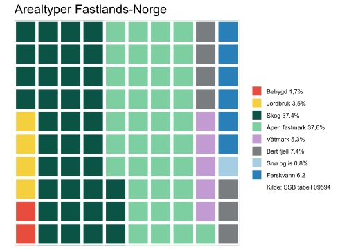
Effekter av arealbruk og arealbruksendringer på biodiversitet, økosystemtjenester og karbonlagring i Norge
Et systematisk kart og beslutningsstøtteverktøy
Erlend B. Nilsen , Trond Simensen , Frode Singsås , Lasse F. Eriksen , Håkon Stokland , Thomas E. Sutcliffe , Anders Kolstad , Francesca Pilotto , Matthew Grainger
Siteres som:
Nilsen, E.B., Simensen, T. Singsaas, F.T., Eriksen, L.F., Stokland, H., Sutcliffe, T.E., Kolstad, A., Pilotto, F., & Grainger, M. 2024. Effekter av arealbruk og arealbruksendringer på biodiversitet, økosystemtjenester og karbonlagring i Norge. Et systematisk kart og beslutningsstøtteverktøy [Rapportukast versjon 0.1]. NINA Rapport 2472. Norsk institutt for naturforskning.
Kvalitetsgranskere: Rapporten er ikke kvalitetssikret og regnes som en pre-print
Ansvarlig signatur: Forskningssjef [fylles ut av forskningssjefen] (sign.)
Sammendrag
Sammendrag settes inn i den trykte (pdf) versjonen av den godkjente rapporten. Dette er en pre-print, og derfor ikke gått gjennom siste runde med fagfellevurdering og godkjenning. Rapporten skal derfor siteres som som Rapportutkast version 0.1.
Abstract
Abstract will be insterted in the printed (pdf) version of the approved report.
1 Innledning
Endringer i menneskelig arealbruk vurderes som den viktigste årsaken til tilbakegang og tap av arter og naturtyper både globalt og i Norge (Díaz et al. 2019; Malhi et al. 2020; Artsdatabanken 2021). Arealendringer påvirker økosystemenes sammensetning, struktur og funksjon, og påvirker dermed økosystemenes evne til å produsere ulike goder og tjenester vi mennesker får fra naturen – ofte omtalt som naturgoder eller økosystemtjenester (Potschin and Haines-Young 2011; IPBES 2019). Det kanskje mest omtalte naturgodet i senere år er klimaregulering, der opptak og lagring av karbon i økosystemene er sentrale faktorer (Griscom et al. 2017). Menneskelig bruk av arealene er dermed en nøkkelfaktor både i arbeidet med å bremse klimaendringene, tilpasning til et endret klima og som den viktigste enkeltfaktoren i arbeidet med å stanse tap av natur og biologisk mangfold (Díaz et al. 2019).
Å kvantifisere, forstå og formidle dynamikken i arealendringer og effektene av endringene for naturmangfoldet er en grunnleggende forutsetning for kunnskapbasert arealplanlegging og -forvaltning. Imidlertid mangler aktørene i arealforvaltningen i dag oppdaterte norske kunnskapssynteser om de direkte og indirekte sammenhengene mellom arealbruk, klimaendringer og naturmangfold, der den samlede vekten av evidens fra forskningen er vurdert, og der usikkerheten omkring kunnskapen er synliggjort. Dette gjelder både grunnleggende usikkerhet om årsak-virkningsmekanismer om effekter av arealbruk på naturmangfold og usikkerhet om det empiriske datagrunnlaget for slike vurderinger (Jaureguiberry et al. 2022). I samfunnsdebatten om arealbruk og natur vises det derfor ofte til internasjonale globale kunnskapssynteser, til tross for betydelig usikkerhet knyttet til hvorvidt kunnskapen fra slike globale kunnskapssynteser lar seg overføre til nasjonalt, regionalt og lokalt nivå i Norge.
Aktørene i arealplanlegging og forvaltning tar løpende beslutninger om bruk av arealer til ulike formål, som utbygging, vern, bruk og høsting av naturressurser og restaurering og istandsetting av tidligere naturinngrep. Naturmangfoldlovens §8 slår fast at «offentlige beslutninger som berører naturmangfoldet skal så langt det er rimelig bygge på vitenskapelig kunnskap om arters bestandssituasjon, naturtypers utbredelse og økologiske tilstand, samt effekten av påvirkninger.» (Lov om forvaltning av naturens mangfold (Naturmangfoldloven) 2009). Dette fordrer at vitenskapelig kunnskap om effektene av påvirkninger er tilgjengelig. Som et utgangspunkt for å vurdere kunnskapsgrunnlaget om hvordan arealendringer påvirker biodiversitet, økosystemtjenester og karbonlagring i Norge, gjør vi her kort rede for pågående areal- og arealbruksendringer i Norge. Disse endringene er delvis et resultat av historiske prosesser, og delvis et resultat av globale og regionale endringer, lokal politikk og lokal arealbruk.
1.1 Pågående areal- og landskapsendringer i Norge
Litt i underkant av 2% av Norges areal var i 2023 utbygd med veier, infrastruktur, bebyggelse og annet sterkt endret areal (SSB statistikkbanken - tabell 09594). Andelen er høyere enn i verden for øvrig (1%) men lavere enn gjennomsnittet i EU (4%) (Chen et al. 2015; Eurostat 2018). Norge skiller seg fra mange andre europeiske land ved at vi har lite jordbruksareal: bare 3% dyrka mark og innmarksbeite. Byer og tettsteder var i vekst i hele forrige århundre, og bebygd areal er ifølge SSB også i dag jevnt økende. I perioden 1990-2019 ble det totalt bygget ned 1 500 km2, som tilsvarer litt under 50 km2 årlig. Utenom bebygd areal og jordbruksområder er Norges landareal i dag dominert av fjell, hei og vidde (45%), skog (37%), ferskvann, (6%) og våtmark (5%) og varig is og snø (1%).
Selv om andelen av landarealet i Norge som er direkte utbygd eller dyrket opp er lav (ca. 5%), er mye av landet påvirket av menneskelig arealbruk. Siden siste istid har så å si alt areal vært i bruk av mennesker – til jakt, fiske, beite, høsting av for, skogbruk, utvinning av naturressurser, friluftsliv og rekreasjon, og senere også til naturvern, som også er en form for arealbruk. Omfang og intensitet i den menneskelige arealbruken har imidlertid endret seg mye opp gjennom århundrene (eks Prøsch-Danielsen and Simonsen 2000; Marquer et al. 2017). På terskelen til den moderne tid, omkring 1850, var naturressursene utnyttet helt til grensa for hva landområdene kunne tåle, og produksjonen var maksimert med datidens teknologi. Store arealer ble påvirket av menneskelig arealbruk, men med moderat intensitet etter dagens målestokk. Ifølge Edvardsen et al. (2024) kjennetegnes perioden etter 1850 ved en polarisering av den menneskelige arealbruken, med mer intensiv bruk av de best egnede arealene til jord- og skogbruk, mens andre arealer i utmarka gradvis ble tatt ut av bruk eller tas i bruk til nye formål. Vi høster mer fra naturressursene enn før, takket være avl, teknologi, og vitenskap og innovasjon, men det foregår på en mindre del av landarealet (intensivering). Opphør av ekstensiv hevd og skjøtsel av tradisjonelle utmarksarealer fører til endringer i kulturlandskap, som beite- og slåtteenger, lyng- og fjellheier.
Gjennom mange år har jordbruksareal blitt bygd ned til fordel for boliger, veier, industri og andre formål, men omfattende nydyrking har kompensert for tapt jordbruksareal slik at det samlede jordbruksarealet har holdt seg nokså stabilt siden 1920-tallet (SSB statistikkbanken - tabell 09594). Omfattende strukturendringer i jordbruket har gitt en nedgang på 45% i antall gårdsbruk, fra 70 740 i 1999 til 38 633 i 2020, og omfattende endringer i både arealbruk og driftsmåter, har ført til at jordbrukslandskapet har blitt mer homogent, der tidligere mosaikkformete kulturlandskap er endret til mer sammenhengende driftsarealer.
Redusert beite og sanking av ved til blant annet seterbruk, kombinert med akselererende klimaendringer, gjør at tre- og skoggrensene generelt stiger langsomt i Norge (Bryn and Potthoff 2018). Norges høyeste registrerte tregrense ligger nå 1404 meter over havet, snaut 208 meter høyere enn høyeste måling i 1918 (Jotunheimen). Arealer med varig snø og is (breer, m.m.) er i tilbakegang på grunn av varmere klima, og er nå på sitt minste etter at målinger av breer begynte tidlig på 1900-tallet (Andreassen 2022).
Vi har både avskoging og «påskoging» i Norge, men det samlede arealet med skog har vært relativt stabilt siden 1990-tallet. Samlet biomasse i skogene har fram til helt nylig økt, og det samlede skogvolumet er mer enn doblet de siste hundre årene, men tilveksten har flatet ut de siste årene (SSB statistikkbanken - tabell 09594). Norsk skog har varierende grad av menneskelig hogstpåvirkning. Naturskog med høy alder, stor variasjon i forekomst av død ved og/eller sjiktet skog og uten synlige spor av menneskelige inngrep utgjør i dag knapt 2% av skogarealet, dersom landsskogtaksteringen definisjon legges til grunn (Skarpaas and Halvorsen 2022). Dette arealet øker relativt sett med 3–4% pr. år. Med en mindre streng definisjon av naturskog – skog uten store inngrep i nyere tid, etablert før 1940 og uten hogstinngrep etter 1965 – utgjør naturskogen ca. 30 prosent av det produktive skogarealet. Dette arealet reduseres relativt sett med litt over 1 prosent i året. (Storaunet and Rolstad 2020; Halvorsen et al. 2022). Overgangen til bestandsskogbruk etter andre verdenskrig, med større hogstflater og skogplanting i produktiv skog, har i stor grad endret skogøkosystemenes struktur. Antall kilometer nye skogsbilveier økte raskt fra 1950-tallet og fram til årtusenskiftet og øker nå svakere, med ca. 150 km pr år (Landbruksdirektoratet 2024).
Områder med myr og annen våtmark (dvs. myr, kilde, sumpskog og seminaturlig våteng) utgjør 5-12% av landarealet i Norge. De siste 50 årene har vi hatt en betydelig reduksjon av arealer med tidligere myr og andre typer våtmark (ca. 7 000 km²) som er tapt eller forringet gjennom nedbygging, grøfting eller oppdyrking (Lyngstad et al. 2018; Edvardsen et al. 2024).
Omkring en tredjedel av vannarealet i Norge er påvirket av vannkraftutbygging, tilsvarende i underkant av 6 000 km². Et areal på om lag 1 000 km² er neddemt, og 15 av Norges 20 høyeste fossefall er regulert (Schartau et al. 2008). Rundt 64% av Norges samlede vannkraftpotensial er i dag bygget ut, mens 23% er vernet (NVE 2020).
De første naturfredningene av enkeltlokaliteter i Norge ble vedtatt i 1905 og Norges første Nasjonalpark, Rondane, ble opprettet i 1962. Den den største veksten i vernet areal og antall verneområder skjedde på 1980- og 2000-tallet. I dag er 17,5 prosent av landområdene i Norge vernet (Miljødirektoratet 2022). Dette arealet domineres av høyfjellsområder, og flere viktige naturtyper er i liten grad fanget opp. Dette gjelder spesielt skog, kyst- og sjøområder.
Vi vet fra andre land at naturlige forstyrrelser i økosystemene i form av for eksempel skogbranner, insektangrep, vindfall, flom, ras og skred øker i takt med et endret klima. Vi har generelt lite data om omfanget og frekvensen av slike forstyrrelser over tid i Norge, men regionale prognoser for Norge tilsier færre døgn med snø, økt omfang av naturlige forstyrrelser i økosystemene i form av skogbranner, insektangrep, vindfall, flom, ras og skred (Kausrud et al. 2022).
Grunnleggende kunnskap om utbygging, endringer i arealbruksintensitet og andre konkrete arealendringer er grunnlaget for i neste omgang å vurdere hvilken virkning endringene har for naturmangfold og naturgoder.

1.2 Kunnskap om effekter av arealbruk og arealendringer på naturmangfold og naturgoder
Et sentralt kunnskapsgrunnlag i arbeidet med vurderinger av påvirkningsfaktorer på naturmangfoldet i Norge er rødlister for arter og naturtyper som vurderer risiko for at arter dør ut i Norge eller at naturtyper går tapt (Artsdatabanken 2018, 2021). Rødlistevurderingene følger internasjonale metoder og utføres av eksperter med høy kompetanse på artsgruppene som vurderes (ekspertvurderinger), men vurderingene av påvirkningsfaktorer, inkludert arealbruk og arealendringer, foregår likevel på et relativt overordnet nivå, der årsakssammenhenger mellom arealendringer og effekter på utbredelse og bestandssituasjon for arter og naturtyper sjelden kvantifiseres.
Flere fagsystemer og sentrale overvåkningsprogram er etablert med sikte på å gi en samlet oversikt over tilstand og utvikling i økosystemer eller for ulike artsgrupper (f.eks. Landsskogstaksteringen, (Breidenbach et al. 2020); fagsystemet for økologisk tilstand, (Nybø et al. 2017); Nasjonal insektovervåkning og Rovdata), men slike fagsystemer og overvåkningsprogram gir ikke alltid grunnlag for å avdekke årsak-virkningforhold mellom de konkrete endringene i arealbruk og effekten på arter, økosystemer og naturgoder.
Mangelen på en samlet og omfattende oversikt over forskningsbasert kunnskap om effekter av arealbruk og arealendringer på norske arter, økosystemer og naturgoder fører også til at ulike interessegrupper og sektorer stoler på ulike “fakta,” noe som ofte fører til eskalerende konfliktnivå og dårlige beslutninger. Det er derfor et klart behov både for en oppsummering av kunnskap om temaet og en systematisk kartlegging av kunnskapshull. Politikk og beslutningstaking knyttet til arealbruk og dens effekter av arealbruk på biodiversitet og klima er for øyeblikket blant de mest konfliktfylte og heftig debatterte politiske spørsmålene i Norge. Konfliktene involverer typisk dilemmaer mellom ulike samfunnsmessige bekymringer og interesser støttet av ulike sektorer og aktørgrupper (Skogen et al. 2021; Guldbrandsen and Handberg 2023). Kontrovers om kunnskapsgrunnlaget er også ofte et sentralt aspekt ved konfliktene, kjennetegnet ved uenighet om kunnskapens status og motstridende tolkning av kunnskapen om effektene for naturen av ulike alternativer for arealbruk (Rusch et al. 2022; Aspøy and Stokland 2022).
IPBES (2019), IPCC (2018) og flere senere IPBES-utredninger har foreslått forvaltningsstrategier og tiltak, slik som de knyttet til transformasjonsendringer og transformasjonsstyring, for å muliggjøre oppnåelsen av FNs bærekraftsmål (United_Nations 2015), klimaavtalens mål om å begrense global oppvarming til grensen på 1,5°C og den globale naturavtalens 2050-visjon om å stanse og reversere fortap av biodiversitet (United_Nations 2022). Slike tilnærminger involverer forbedret integrasjon og samhandling mellom samfunnsmessige mål, styringssektorer og flere kunnskapskilder, og er dermed svært relevante for norsk politikk og beslutningstaking knyttet til arealbruk. Imidlertid hindres implementeringen og tilpasningen av internasjonalt anbefalte tilnærminger og verktøy til en norsk kontekst av mangelen på en omfattende forståelse av nasjonale og lokale dilemmaer og konflikter knyttet til arealbruk.
1.3 Systematiske kart over kunnskap og kunnskapshull
Systematiske kart, også kjent som Evidenskart eller Evidenshullkart, er utviklet for å gi en oversikt over tilgjengelig evidens om et bredt tema (Saran et al. 2020). Mens systematiske kunnskapsoversikter (systematic reviews) søker å svare på smale, veldefinerte spørsmål, er systematiske kart først og fremst egnet til å identifisere og katalogisere tilgjengelig evidens om politisk relevante spørsmål (James et al. 2016). Systematiske kart søker å sammenstille resultatene fra kunnskapsgjennomganger på en brukervennlig måte, for eksempel ved hjelp av grafer, kart eller søkbare databaser (Miake-Lye et al. 2016). Interaktive figurer og applikasjoner og som visualiserer kartleggingen blir i økende grad brukt for å gi en dynamisk presentasjon av resultatene for brukerne (slik som EviAtlas; Haddaway et al. (2019)).
Det er viktig at systematiske kart over kunnskap ikke fremstilles som et mål i seg selv. Systematiske kart forteller først og fremst hva vi har kunnskap om, mens systematiske oversikter indikerer hva vekten av evidens sier om utvalgte forskningsspørsmål. Uten ytterligere evidenssyntese må beslutningstakere være forsiktige med å treffe beslutninger basert kun på evidensens vekt alene (dvs. ved stemmeoptelling, jf. Hedges and Olkin (1980)). Systematiske kart kan ikke erstatte stringensen ved systematiske oversikter, men kan gi beslutningstakere en oversikt over kunnskapsgrunnlaget ved å belyse hull eller klynger av kunnskap. De kan vise hvor evidenssyntese kan eller bør finne sted, og dermed avdekke hvilke forskningsspørsmål har vi tilstrekkelig med tilgjengelig evidens til å svare på ved bruk av metaanalyser og på hvilke områder det er videre behov for primærforskning. På den måten kan systematiske kart være med på å begrense “bortkastet forskning” (Engelsk: Research waste) (Grainger et al. 2020). Beslutningsmodeller kan supplere resultatene av en systematisk evidenssyntese for å plassere den tilgjengelige evidensen i en beslutningskonteksten (Carrick et al. 2019).
1.4 Formålet med kunnskapssammenstillingen
Hovedmålet med dette prosjektet er å gi en helhetlig oversikt over tilgjengelig kunnskap knyttet til effekter av arealbruk og arealbruksendringer på norsk natur, med fokus på biologisk mangfold, økosystemtjenester, klimatilpasning, samt karbonbinding og lagring. Kartet er begrenset i geografisk omfang til Norge, Sverige og Finland (se inklusjonskriterier nedenfor), med hovedfokus på Norge. Vi har i tillegg laget en enkelt beslutningsstøttemodell for å vise hvordan oversikten kan benyttes til å forstå endringer i forskningsinnretning over tid.
De viktigste forskningsspørsmålene vi dekker i vårt systematiske kart er 1) Hvilken forskningsbasert kunnskap finnes om virkningene av arealbruk og endringer i arealbruk på biologisk mangfold, økosystemtjenester og karbonbinding i Norge, 2) hvilken type konflikter er identifisert mellom ulike former for arealbruk, og 3) hvilke verktøy foreslås for å forbedre styringen.
2 Metoder
Før prosjektet ble gjennomført ble det utviklet en detaljert protokoll som beskriver fremgangsmåten. Denne protokollen inkluderte en detaljert beskrivelse av:
Søkestrenger, søkeord og språk
Eventuelle supplerende søk som f.eks. «citation chasing»
Hvilke databaser vi vil søke i, og eventuelle nettsteder for søk etter grå litteratur som ikke er tilgjengelig i databasene
Sentrale artikler (benchmark-artikler) som søket forventes å plukke opp
Kriterier for screening av artikler (inkludering/ekskluderings-kriterier)
Prosedyrer for sjekk av konsistens mellom review-gruppa
Regler for datakoding
Den første versjonen (versjon 1.0) av protokollen ble uviklet på et tidlig stadie av prosjektet, og sirkulert til en utvidet prosjektgruppe og til utvalgte samfunnsaktører. Basert på tilbakemeldinger på denne versjonen ble en ny versjon av protokollen utarbeidet og publisert. Videre justeringer av protokollen har blitt gjennomført på screening- og koding-stadiet av prosjektet. Alle versjoner av protokollen er publisert åpent på Open Science Framework, og alle versjoner er versjonert og datert. En oversikt over protokollene kan finnes her. Den endelige versjonen av protokollen kan leses her (Nilsen et al. 2024).
2.1 Søk etter litteratur
2.1.1 Søk i online databaser
Systematiske litteratursøk for akademisk (forskningsbasert) litteratur ble gjennomført i Scopus og i følgende Web of Science Core Collection databaser:
Science Citation Index Expanded (SCI-EXPANDED): 1987–dd.
Social Sciences Citation Index (SSCI): 1987–dd.
Arts and Humanities Citation Index (AHCI): 1987–dd.
Emerging Sources Citation Index (ESCI): 2015–dd.
Det ble gjennomført en rekke preliminære søk i Web of Science, og disse ble benyttet til å fintilpasse søkestrengen (Nilsen et al. 2024).
2.1.2 Søketermer og søkestreng
I vår søkestrategi benyttet vi oss av PICO-rammeverket (James et al. 2016) for å strukturere søket, og sørge for at det var dekkende for vårt primære forskningsspørsmål.
Følgende søkestreng ble benyttet i WoS (tilsvarende streng ble benyttet i Scopus, men her ble søket justert for å passe systemets interface):
TS=(“land use” OR “land cover” OR “space use” OR LULCC OR (planning AND (spati* OR region* OR area* OR conservation OR land* OR urban)) OR (conversion AND (land* OR habitat* OR area* OR ecosystem* OR natur)) OR (change NEAR/3 (land* OR area)) OR “national park” OR landscape* OR habitat* OR Husbandry OR “land shar” OR “land spar” OR (Outdoor NEAR/3 (life OR livin* OR recreat)) OR (restoration AND (nature OR ecosystem)) OR forestry OR (reindeer NEAR/3 (herd* OR husbandr)) OR (livestock NEAR/3 graz) OR “holiday home” OR “secondary home”OR (recreation* NEAR/3 (home* OR cottage* OR cabin* OR propert)) OR tourism OR “wind power” OR “Land manag” OR “Nature conservation” OR ((governance OR management) AND (spati* OR region* OR area* OR conservation OR land* OR urban)) OR aquaculture OR “fish farm” OR hydropower OR “green energy” OR “energy development” OR herding OR agriculture OR transportation OR road OR “oil and gas” OR petroleum OR mining OR windpower OR traffic OR road* OR railway* OR “hydroelectric power” OR “solar power” OR “solar electricity” OR “power plant” OR LULC OR LULUCF OR AFOLU OR FOLU)
AND
TS=(sustainab* OR biodiversity OR “Ecosystem service” OR (carbon NEAR/3 (stor OR sequest)) OR (ecosystem NEAR/3 (impact* OR effect* OR provision* OR regulat* OR support* OR cultur)) OR ((loss OR shrink OR bisection* OR perforation OR fragmentation) AND (habitat OR land)) OR (climate NEAR/3 adapt) OR ecodiversity OR “ecosystem type” OR “ecological process” OR anthropogenic OR conflict OR (diversity NEAR/3 (ecological OR speci* OR population*)) OR red-list OR “water purification” OR “soil retention” OR spiritual OR cultural OR aesthetics OR “climate mitigation”)
Vi screenet alle systematiske litteratursammenstillinger og systematiske kart fra den internasjonale litteraturen, og de to kategoriene ble konminert ved TS=(“Systematic review” OR ”systematic map” OR “rapid review*”). For den primære forskningslitteraturen ble de to kategoriene kombinert ved TS=(Norway OR Norwegian OR Sweden OR Swedish OR Finland OR Finnish), og alle resultatene ble screenet.
I tillegg til søket beskrevet over ble artikler som er sitert av eller siterer (engelsk: forward and backward citation chasing) de 15 benchmark-artiklene søkt opp ved hjelp av verktøyet citationchaser i R (Haddaway et al. 2022).
2.1.3 Test av søkets omfang og dekning
For å sørge for at søket ga en god dekning av den aktuelle litteraturen valgte vi ut 15 benchmark-artikler, og undersøkte hvor godt disse ble fanget opp av søket (Hamre et al. 2007; Skogen et al. 2008; Karlsson et al. 2009; Tombre et al. 2013; Jarnemo et al. 2014; Bouyer et al. 2015; Foldvik et al. 2017; Rolstad et al. 2017; Pedersen and Krøgli 2017; Dorber et al. 2018; Aune et al. 2018; Gundersen et al. 2019; Hamre et al. 2021; Rusch et al. 2022; Korsnes et al. 2023). Artiklene ble valgt ut gjennom en diskusjon i prosjektgruppa, med det formål å dekke både bredde og dybde i søket. I det endelige søket ble totalt 13 av de 15 artiklene fanget opp.

De ulike søkestrategiene (ulike databaser, forward- and backward søk osv) fanget opp et ulikt antall artikler, hvorav en viss andel overlappet Figur 3. Til sammen mener vi at de søk vi har gjennomført har gitt oss en god dekning av den aktuelle litteraturen. Protokollen (Nilsen et al. 2024) beskriver nærmere hvordan søket ble utviklet.
2.1.4 Sammenstilling og håndtering av søkeresultater
Søkeresultater, inkludert listen over benchmarks og citation chasing-resultater, ble lastet ned som .RIS-filer. Studier ble de-duplisert basert på likheter i DOI og tittel ved å bruke R-pakken ‘ASySD’ (Hair et al. 2021). Vi beholdt den nyeste versjonen av alle versjonskontrollerte artikler (for eksempel ble publiserte versjoner av preprints beholdt). De-dupliserte artikler ble deretter lastet opp til RayyanAI. Artikler som gikk gjennom screening av tittel og abstrakt ble deretter eksportert til en delt Zotero-database, og pdf-versjoner ble søkt etter ved hjelp av Zoteros pdf-søkeverktøy. Eventuelle artikler uten pdf-er ble søkt manuelt på ResearchGate eller på tidsskriftsnettsteder. Der hvor pdf-er ikke var tilgjengelige ble de etterspurt fra forfatterne. Beslutninger om eksklusjonsårsaker på fulltekststadiet ble registrert i Notes-verktøyet i Zotero. Koding ble gjort ved bruk av et googleskjema som automatisk fylte ut et google sheet som dannet databasen over inkluderte studier.
2.1.5 Screening av artikler
Vi brukte forhåndsdefinerte inklusjons-/eksklusjonskriterier for å screene kvalifiserte studier (Nilsen et al. 2024). Etter de-duplisering ble tittel og abstrakt screening utført ved å bruke kvalifikasjonskriteriene, og alle studier klassifisert som usikre ble vurdert på fulltekststadiet. Screeningen ble gjort ved hjelp av Rayyan, med dobbel screening av en primær og flere sekundære reviewere. Etter 50 inkluderings-/ekskluderingsbeslutninger brukte vi Rayyan-AI 5-stjerners rangering for å rangere sammendragene for vurdering. Denne algoritmen vurderer sammendrag og titler på allerede inkluderte artikler til å identifisere andre artikler som også har et høyt potensial for inkludering (5 stjerner) eller de med et lavere potensial (1 stjerne).
Uenigheter i gruppen når det gjelder hvilke publikasjoner som tilfredstilte inklusjonskriteriene ble vurdert ukentlig i den tidlige fasen av kodingen, og kvalifikasjonskriteriene ble revurdert og justert når frekvensen oversteg 15 %. Motstridende beslutninger ble avstemt gjennom diskusjoner med hele prosjektgruppen. En nærmere beskrivelse er gitt i protokollen (Nilsen et al. 2024).
2.2 Inkluderings- og ekskluderingskriterier
Vi gikk gjennom alle studiene som ble funnet via søket beskrevet over, og inkluderte / ekskluderte artikler basert på kriteriene angitt nedenfor. Kun studier utført i Norge, Sverige og Finland eller allerede eksisterende systematiske oversikter (også referert til som metaanalyser) med global, europeisk eller fennoskandisk dekning ble inkludert i oversikten. Bare artikler der fullteksten er skrevet på engelsk, norsk, svensk eller dansk ble inkludert.
Studier ble inkludert dersom de vurderte effekter av arealbruk eller arealbruksendringseffekter på biologisk mangfold, økosystemtjenester/funksjoner eller karbonbinding og lagring i Feno-Skandinavia. Bare studier som fokuserer på terrestriske, akvatiske eller kystnære områder ble inkludert (dvs. studier som fokuserer på marine systemer ble ekskludert).
Studier ble også inkludert dersom de vurderer konflikter, verktøy eller styring knyttet til arealbruk og dekker endringer i dets effekter på biologisk mangfold, økosystemtjenester og/eller karbonbinding og lagring av økosystemer i Fennoskandia. Forholdet måtte være eksplisitt beskrevet i studien for at posten ble inkludert.
Studier av alle geografiske målestokker (nasjonale, regionale og lokale) ble vurdert som relevante for inkludering.
2.2.1 Kvalifiserte intervensjoner
Arealbruk og/eller arealdekning endres gjennom en eller flere drivere som er av menneskeskapt opprinnelse og resulterer i en eller flere av kjernemekanismene (endring i habitat – mengde; habitatsammensetning; habitatstruktur; habitatfunksjon; indirekte , for eksempel endret menneskelig bruk i rekreasjon osv.).
2.2.2 Kvalifiserte responsvariabler (utfall)
Kvalifiserte utfall inkluderte funksjon, struktur, mangfold, overflod, atferd, sammensetning eller rikdom på et hvilket som helst nivå av biologisk organisasjon (genetisk, art, samfunn, økosystem, landskap – flere økosystemer), samt studier som fokuserer på mengden av mangfold eller kategori av økosystemtjenester (tilveiebringelse, regulering, støtte eller kulturell tjeneste og karbonlagring og -sekvestrering).
I tillegg ble studier innen samfunnsvitenskap inkludert dersom de eksplisitt tar for seg konflikter, verktøy og styring knyttet til effekter arealbruk og endring av arealdekke på biologisk mangfold, økosystemtjenester og/eller karbonbinding og -lagring.
2.2.3 Kvalifiserte studiedesign
Alle studiedesign ble vurdert som kvalifiserende, inkludert både kvantitative og kvalitative studier.
2.3 Vurdering av studienes validitet
Vi vurderte ikke kvaliteten på de inkluderte primærstudiene da vi kun hadde som mål å kartlegge tilgjengelig litteratur. For de systematisk litteratursammenstillingene (Systematic reviews og Systematic maps) benyttet vi en modifisert GRADE-tilnærming for å vurdere kvaliteten på studiene. Hver oversiktsartikkel ble vurdert med tanke på risiko for skjevhet i dataene, mangel på presisjon, inkonsistens, indirekte skjevehet og publiseringsskjevhet. Vi vurderte hver publikasjon mot alle disse kriteriene for å finne ut hvor stor «tillit» vi har til bevisene som ble presentert.
Følgende forklaring for de ulike GRADE-domenene lå til grunn for vår vurdering:
Risiko for bias: Bias oppstår når en studies resultater ikke er forventningsriktige på grunn av design- eller gjennomføringsfeil. Denne usikkerheten reduserer tilliten til den estimerte effekten, ettersom potensielle skjevheter kan påvirke resultatene. Evaluatorer må avgjøre om risikoen for skjevhet i individuelle studier påvirker deres tillit til behandlingseffekten.
Upresishet: GRADE-tilnærmingen evaluerer unøyaktighet ved å undersøke 95 % konfidensintervallet rundt det beste estimatet av den absolutte effekten. Sikkerheten reduseres dersom konklusjonen fra studiet varierer avhengig av om den sanne effekten ligger i øvre eller nedre ende av dette intervallet.
Inkonsistens: Sikkerheten er høyest når flere studier viser konsistente effekter. Evaluatorer bør vurdere likheten mellom punktestimater, hvorvidt konfidensintervaller overlapper og statistisk heterogenitet for å avgjøre om inkonsekvens påvirker sikkerheten i konklusjonen.
Indirektehet: Bevis er mest pålitelig når studier direkte sammenligner intervensjonene og populasjonen av interesse, og rapporterer utfall som er avgjørende for beslutningstaking.
Publikasjonsbias: Publikasjonsbias er utfordrende fordi det innebærer å utlede manglende bevis fra de tilgjengelige data. Til tross for deres begrensninger, kan statistiske og visuelle metoder bidra til å oppdage publikasjonsskjevhet, som er mer vanlig i observasjonsdata.
2.4 Datakodestrategier
For alle artikler som oppfylte inkluderingskriteriene og som derfor ble inkludert i gjennomgangen hentet vi ut en del nøkkelegenskaper og informasjon for senere dataanalyse. Et utvalg på 15 artikler ble kodet av alle i reviewgruppa for å skape enighet omkring koding. Kriterier for koding er gitt i vedlegg 3. ‘Metadata’ inkluderte grunnleggende egenskaper for hver studie, som forfatternavn, navn på tidsskrift, serie, studielengde og år. De resterende kategoriene inkluderte informasjon om åpen vitenskap, geografisk, miljømessig og romlig kontekst, forskningstype og kontekst, taksonomisk kontekst, type arealbruk og arealbruksendring, utfall og påvirkede tiltak, styringseffekter og verktøy. En nærmere forklaring og detaljer er gitt i (Nilsen et al. 2024). På grunn av ressursbegrensninger ble kun artikler fra Norge samt eksisterende systematiske litteratursammenstillinger kodet i henhold til protokollen. I resultatene vil vi derfor legge hovedvekt på disse.
2.5 Involvering av brukere og samfunnsaktører
Planer for vurderingen ble presentert på en konferanse arrangert av Miljødirektoratet og Norges forskningsråd 23. oktober 2022. Et generelt interessentmøte ble arrangert av NINA 25. april 2023. Fokus og omfang av vurderingen ble etter det innsnevret og bedre definert, og en ny versjon av protokollen ble utarbeidet. Detaljer om dette møtet og endringene i omfang er tilgjengelige på forespørsel. Interessenter som deltok på dette arrangementet ble invitert til å kommentere utkastet til protokollen før innsending til publisering. Disse innspillene er lagret og arkivert sammen med protokollen her. Interessenter var ikke involvert under gjennomføringen av vurderingen etter dette.
2.6 Avvik fra protokollen
Før vi startet med litteraturgjennomgangen utviklet vi en detaljert protokoll (Nilsen et al. 2024) som dannet grunnlaget for vårt arbeid. Søket ble gjennomført som beskrevet, men på grunn av et vesentlig større treff på vitenskapelige artikler enn antatt ble det ikke kapasitet i dette prosjektet til også å gå gjennom den grå litteraturen. I tillegg er et antall artikler (ca 10%) ikke gjennomgått screening på grunn av kapasitetsutfordringer. Vi benyttet imidlertid ulike filtre i verktøyet Rayyan, inkludert Rayyan-AI 5-stjerners rangering av artikler og sørget for at alle artikler som har en høy sannsynlighet for å være relevante ble screenet. Dette punktet er også berørt nærmere i diskusjonen. Både inkluderingskriterier og datakodestrategi var som beskrevet i protokollen. Kun primærstudier fra Norge samt alle systematiske litteratursammenstillinger ble prioritert for koding.
3 Resultater
3.1 Resultat av litteratursøket
Litteratursøket resulterte i totalt 36418 artikler (Figur 4). På sammendragsstadiet screenet vi 16 093 artikler, og ekskluderte 13 472 av dem. På fulltekststadiet vurderte vi 2 583 for inkludering, og endte opp med 584 artikler i gjennomgangen.
3.2 Litteratur fra Norge
Totalt ble 362 artikler fra Norge inkludert etter at screeningen var gjennomført. De eldste artiklene vi fanget opp var publisert i 1986 og de nyeste var publisert i 2024. Som vist i Figur 5 varierte antallet mellom ulike år, og selv om det har vært en generell økende tendens i antall artikler publisert pr år er ikke denne økningen så markant de siste 10-15 årene.

Som det framkommer av Figur 6 er det en stor overvekt over observasjonsstudier (Observational studies) i vårt datamateriale. Observasjonsstudier er her definert som studier som baserer seg på empiriske data fra systemet som undersøkes. Også konseptuelle studier og scenarie-modellering er relativt hyppig forkommende.

I vår koding av artiklene fra Norge vurderte vi også hvilken fagdisiplin studien hører inn under. I vårt materiale er det en stor overvekt av forskning som faller inn under fagdisiplinen matematikk og naturvitenskap (Mathematics and Natural Sciences) (Figur 7), men det er også en betydelig andel samfunnsvitenskapelige studier (Social Sciences). De andre disiplinene er i liten grad inkludert i vårt datamateriale fra Norge. Merk at dette tildels skyldes måten vi gjennomførte søk og screening på.

3.3 Naturvitenskapelig litteratur fra Norge
I dette kapittelet skal vi se nærmere på de artiklene som brukte en naturvitenskapelig metode, og kategorisere disse langs en lang rekke ulike akser for å besvare problemstillingen presentert i innledningen. Totalt ble 279 artikler som omhandlet naturvitenskapelige tema inkludert. Merk at en og samme artikkel være representert i flere kategorier (f.eks. med flere økosystemer) slik at totalsummen i figurene ikke alltid summerer opp til totalt antall inkluderte artikler.
De klart mest benyttede forsøksdesignene blant disse er “kontroll-behandling” (Control-Impact)-design og “etter” (After)-design (Figur 8). Merk at vi har kategorisert forskning som f.eks. undersøker hvordan gradienter i arealbruk påvirker den aktuelle responsvariabelen som “kontroll-behandling” (Control-Impact)-design. Det er en påfallende mangel på godt designede “randomisert eksperimenter” (Randomised controlled trials) og studier som følger både kontrollområder og behandlingsområder både før og etter (Before-after-control-impact) at et tiltak er satt i verk. Disse to studiedesignene er generelt mer egnet til å undersøke årsak-virkningssammenhenger.
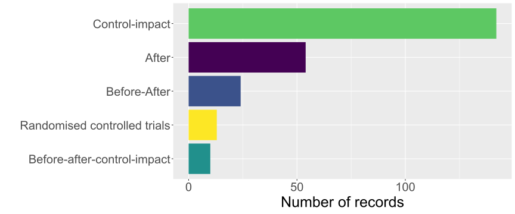
Hvor stor andel av forskningen praktiserer Open Science-prinsipper?
Åpen forskning gjør det i prinsippet mulig for andre å etterprøve resultatene fra den publiserte forskningen og legger til rette for effektiv gjennbruk av data og kildekode. I vårt datamateriale er det kun en liten andel av artiklene som har gjort data og kildekode tilgjengelig (Figur 9). En enda mindre andel av forskningen er basert på forhåndsregistrerte hypoteser. Siden det kun er de siste årene det har vært vanlig at tidsskrifter krever at data blir gjort åpent tilgjengelig kan man forvente at andelen er noe økende den siste delen av perioden. Vi har ikke vist dette med figur her, men våre data viser en slik økning men med en fortsatt lav andel også de siste årene.

Hvordan er forskningen fordelt med hensyn til størrelse på studieområde (romlig skala)?
Det meste av forskningen er gjennomført på det vi har karakterisert som lokal (f.eks. en del av en kommune) eller regional (f.eks. et fjellområde eller et fylke) (Figur 10). En betydelig mindre andel av forskningen dekker hele landet eller er basert på multinasjonale datasett.
Hvor lange tidsserier med empirisk data ligger til grunn for den publiserte forskningen?
I økologisk forskning er det ofte nødvendig med lange tidsserier for å kunne skille effekten av naturlig variasjon fra menneskelige inngrep. I vårt materiale er den største delen av forskningen er basert på korte tidsserier (Figur 11). En veldig stor andel av studiene var av kun 1-2 års varighet, og et fåtall av studiene var basert på det man kan kalle “lange tidsserier”. Merk at for mange av de lengste tidsseriene kan det være snakk om sammenlikning mellom enkeltår i perioden, ikke data for hele perioden.
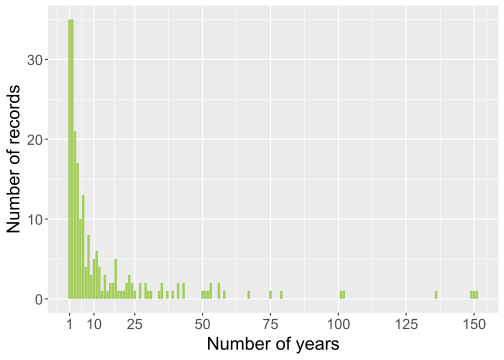
Hvor stor andel av forskningen er gjennomført i ulike økosystemer?
De hyppigst studerte økosystemene i vårt materiale er skog (Forest) etterfulgt av semi-naturlige økosystemer (Semi-natural ecosystems) og fjelløkosystemer (Mountains) (Figur 12), samt elver og vann (Rivers & lakes). Studier i kategorien semi-naturlige økosystemer er dominert av studier på semi-naturlig engvegetasjon. De øvrige økosystemtypene er langt dårligere representert.
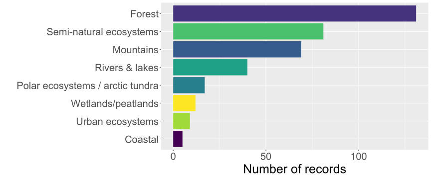
Hvordan er forskningen fordelt på ulike fylker?
Det er en betydelig variasjon i hvor mye av forskningen som er fanget opp i vår litteraturgjennomgang som har vært lokalisert i de ulike fylkene (Figur 13). Flest studier er gjennomført i fylkene Innlandet, Akershus, Trøndelag og Vestland, mens det er færrest artikler fra fylkene Møre og Romsdal samt Troms. I tillegg er det få studier som fokuserer på arealbruk på Svalbard.

Hvordan er forskningen fordelt med tanke på arealbruk og arealbruksendringer?
Det er gjennomført studier av en lang rekke ulike former for effekter av arealbruk og arealbruksendringer (Figur 14; Figur 15). På et overordnet plan er det effekter av ulike former for landbruk (Agriculture) og utnyttelse av biologiske ressurser (Biological resource use) som er hyppigst studert. Kategorien utnyttelse av biologiske ressurser (Biological resource use) omfatter både skogbruk og jakt & fiske. Det er svært få artikler som omhandler vern (Protection) og restaurering (Restoration).
Dersom vi bryter ned effekter av arealbruk og arealbruksenderinger i finere kategorier (ref. Nilsen et al. (2024)), ser man at særlig er effekter av skogbruk (Biological resource use: forestry) og effekter av tamme beitedyr (Agricultrue & aquaculture: outfield resources (including grazing)) hyppig studert (Figur 15).
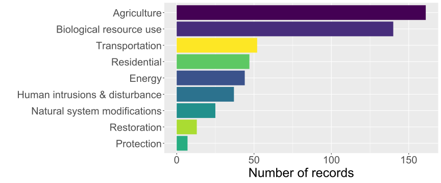

Hvordan er forskningen fordelt på ulike taksonomiske nivå?
Det er en klar overvekt av artikler som fokuserer på (en eller flere) arter (Species) i den litteraturen vi har gått gjennom fra Norge (Figur 16). Det er også en relativt stor andel av litteraturen som fokuserer på hele riker (Kingdom). Dette er i stor grad snakk om artikler som beskriver responsen til hele plantesamfunn på en eller flere former for arealbruk.

Hvordan er forskningen fordelt på ulike essensielle biodiversitetsvariabler (EBV)
Vi benyttet i denne gjennomgangen klassifiseringssystemet essensielle biodiversitetsvariabler (EBV) til å kategorisere hvilken biologisk responsvariabel som ble studert. EBV er et hierarkisk system som består av seks klasser og 21 variabler. Av de seks klassene i Figur 17 er det flest studier som har fokusert på arters bestander (Species populations) samfunnssammensetning (Community composition) og arters egenskaper (Species traits). Artsegenskaper inkluderer for eksempel artenes reproduksjonsrate, atferd, diett og bevegelse i landskapet osv. I kontrast til dette var det svært få studier som studerte hele økosystemers funksjon (Ecosystem functioning) eller struktur (Ecosystem structure). Tilsvarende var det veldig få som studerte effekter av arealbruk på genetisk sammensetning (Genetic composition).
Ser vi nærmere på de enkelte biodiversitetsvariablene innenfor klassene (Figur 18), er det tre variabler som er klart hyppigst studert: taksonomisk diversitet (Taxonomic/phylogenetic diversity), arters utbredelse (Species distribution) og arters antall (Species abundance). I tillegg er det relativt mange studier som fokuserer på hvordan aralbruk og arealbruksendringer påvirker arters arealbruk/seleksjon (Movement (or habitat use/selection)).
Hvordan er forskningen fordelt på ulike økosystemtjenester?
Den hyppigst forekommende økosystemtjenesten i vårt datamateriale for studier som har benyttet naturvitenskapelige metoder var lagring og sekvestrering av karbon (R & M Carbon storage and sequestraton). Det var et mindre antall studier som studerte opplevelse- og kunnskapstjenester (Cultural ecosystem services) (@fig-Ecosystem_services).

Hvordan er studier som fokuserer på arter fordelt?
Blant studier som fokuserte på en eller et fåtall arter var det studier av rein (Rangifer tarandus) som var hyppigst forekommende i vårt datamateriale (Figur 20), mens studier av arealbrukseffekter på gaupe (Lynx lynx), elg (Alces alces), ørret (Salmo trutta) og laks (Salmo salar) kom på de neste plassene i frekvenslisten. I figuren under er det kun de hyppigst studerte artene som er vist fram, og det er gjennomført studier av en rekke andre arter.

3.4 Samfunnsrelatert litteratur fra Norge
Her følger resultatene fra vår gjennomgang av de studiene som har analysert en eller annen form for konflikt, et forvaltningsverktøy eller styring mer generelt. Dette utgjør 92 artikler av total 362 artikler (25%). Av disse igjen er det kun 42 artikler som bruker samfunnsvitenskapelige metoder, det vil si 12% av studiene totalt.
Hvilke samfunnsfaglige tema har blitt forsket på? (Konflikter, styring og forvaltningsverktøy)
Av de samfunnsrelaterte studiene fokuserer betydelig flere på styring (Governance) og forvaltningsverktøy (Tools) enn på konflikter (Conflict) (Figur 21).

Hvilke samfunnsvitenskapelige metoder er brukt i de samfunnrelaterte studiene?
Av de samfunnsvitenskapelige studiene vi har gjennomgått er det flest som har brukt dokumentstudier og intervju som metode (Figur 22). Det høye antallet av førstnevnte gjenspeiler i noen grad at en del studier kompletterer andre forskningsmetoder ved å undersøke for eksempel politiske dokumenter eller tidligere utvikling på temaet. En del studier har også brukt spørreundersøkelser, samt blandede metoder. Færre studier tok i bruk metoder for aksjonsforskning og deltagende forskning, mens en studie tok i bruk etnografiske metoder.
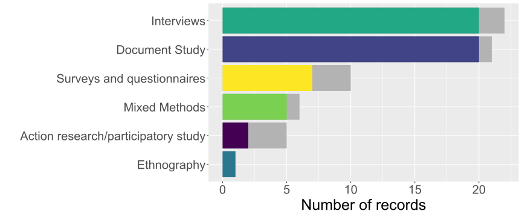
Hvilke analytiske tilnærminger er brukt i de samfunnsvitenskapelige studiene?
Hovedparten av de samfunnsrelaterte studiene hadde en analytisk tilnærming som omhandlet styring og forvaltning (Figur 23). Deretter følger tilnærminger som vektlegger økonomiske forhold, aktørers oppfatninger og forståelser, deltagende, demokratiske og/eller deliberative prosesser, samt maktrelasjoner og aktørgrupper. Færre studier vektlegger analytiske tilnærminger knyttet til bærekraft, tverrsektorielle prosesser og gjennomgripende endringer (transformasjoner).

Hvilke økosystemer har vært tema for samfunnsrelaterte studier?
Av den samfunnsrelaterte og den samfunnsvitenskapelige forskningen vi har undersøkt er flest studier relatert til skogøkosystemer (Forest), etterfulgt av fjelløkosystems (Mountains) og semi-naturlige økosystemer (Semi-natural ecosystems) og fjelløkosystemer (Figur 24). Få studier fokuserte på myr og våtmark (Wetlands/peatlands) og urbane økosystemer (Urcan ecosystems).

I hvilken grad fokuserer de samfunnsrelaterte studiene på effekter av arealbruk henholdsvis på naturmangfold, karbonlagring eller begge?
De aller fleste av de samfunnsrelaterte artiklene fokuserte på biodiversitet, mens noen få også så på aspekter ved karbonlagring eller -opptak (Figur 25). Ingen av studiene kun kun på karbonlagring eller -opptak.

Hvilke typer arealbruk fokuserer de samfunnsvitenskapelige studiene på?
Det systematiske kartet viser at to typer arealbruk skilte seg ut som de som har fått mest oppmerksomhet i den samfunnsrelaterte forskningen, nemlig skogbruk (Biological resource use: forestry) og vern (Protection) ( Figur 26). Deretter følger flere ulike typer arealbruk som omfatter ressursbruk, forstyrrelser, arealinngrep samt restaurering.
Hvilke aktører er mest studert?
I den samfunnsrelaterte forskningen vi har gjennomgått er det flest studier som involverer styringsorganer (Governing bodies), etterfulgt av studier som involverer landeiere og landeierorganisasjoner (Land-owners and land-owner organizations), og deretter de som involverer borgere (Citizens) (Figur 27).
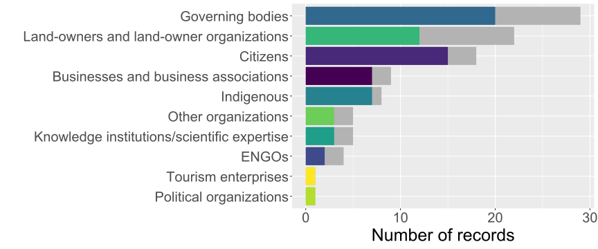
Hvilke styringsnivå fokuserer de samfunnsvitenskapelige studiene på?
Flertallet av de samfunnsrelaterte artiklene satte søkelys på det lokale styringsnivået (Local), typisk kommunenivået, mens de fleste andre fokuserte på henholdsvis de nasjonale (National) og regionale (Regional) styringsnivåene (Figur 28).
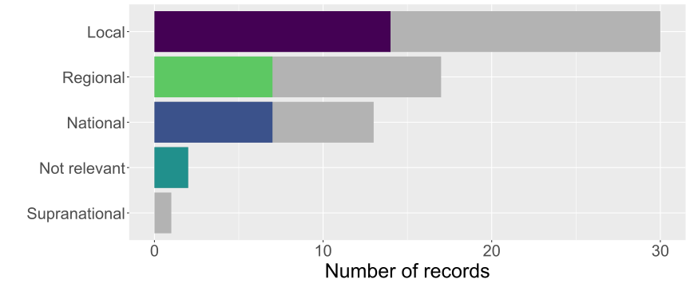
Hvilke sektorer fokuserer de samfunnsvitenskapelige studiene på?
Flest studier i den samfunnsrelaterte forskningen vi gjennomgikk var relatert til sektor for kommunal- og distriktspolitikk (Local government andregional development), etterfulgt av sektor for landbruk- og matpolitikk (Agriculture and food) samt sektor for klima- og miljøpolitikk (Climate and environment) (Figur 29). Vi lette også etter artikler som studerte følgende sektorer eller samfunnsmessige områder, men hvor vi ikke fant noen artikler: Children and Families, Digitalisation and Public Governance, Health and Care Services, Justice and Public Security, Culture and Equality, Education and Research, Transport, Foreign Affairs.

3.5 Systematiske litteratursammenstillinger
I dette kapittelet presenteres resultatene fra gjennomgangen av de systematiske litteraturgjennomgangene som ble fanget opp av vårt søk og som ble vurdet som relevante basert på våre inkluderingskriterier. I motsetning til primærstudier, hvor vi kun inkluderte artikler fra Norge, Sverige og Finland var kriteriet for eksisterende systematiske litteratursammenstillinger at de hadde global, Europeisk eller Fennoskandisk dekning. Narrative oversiktsartikler ble ikke inkludert i vår gjennomgang. Totalt ble 158 artikler inkludert, hvorav 52 var metaanalyser på mer begrensede områder.
Hvor hyppig er ulike økosystemer, arealbruk og arealbruksendringer inkludert i de systematiske litteratursammenstillingene?
Skog (Forest), elver og innsjøer (Rivers & lakes) og semi-naturlige økosystemer (Semi-natural ecosystems) var overrepresenterte blant de systematiske litteratursammenstillingene (Figur 30). Til sammenlikning var det færre studier som fokuserte på fjell (Mountains)- og kystøkosystemer (Coast).

Hvilke arealbrukskategorier er studert blant de systematiske litteratursammenstillingene?
Hovedvekten av de systematiske litteratursammenstillingene har fokusert på arealbrukskategoriene jordbruk (Agriculture), inkludert beiting, og bruk av biologiske ressurer (skogbruk, jakt, fisk osv.; Biological resource use) (Figur 31; Figur 32).
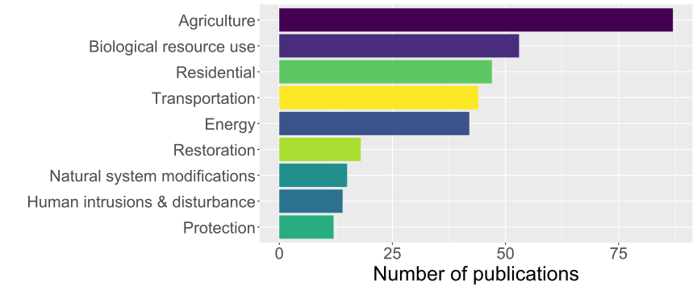

Vurdering av studiekvalitet på systematiske litteraturesammenstillinger
De systematiske litteraturesammenstillingene har i stor grad fokusert på Critically appraised tema eller de har gjort en meta-analyse basert på en systematsk litteratursammenstilling (Figur 33). Critical appraisal mangler en god oversettelse til norsk, men i kunnskapssynteser henspeiler dette den systematiske evalueringen av studier for å avdekke forskjeller i kvalitet, gyldighet, og relevans, før man velger å eventuelt inkludere de i en litteratursammenstilling. Prosessen med critical appraisal hjelper til med å sikre at konklusjonene fra kunnskapssyntesen er basert på troverdig og robust evidens.

Risiko for systematisk skjevhet
De systematiske litteratursammenstillingene som forekommer i datamaterialet har betydelige risiko for systematisk skjevhet og har i mindre grad vurdert denne skjevheten i de individuelle studiene som de har benyttet seg av (Figur 34).
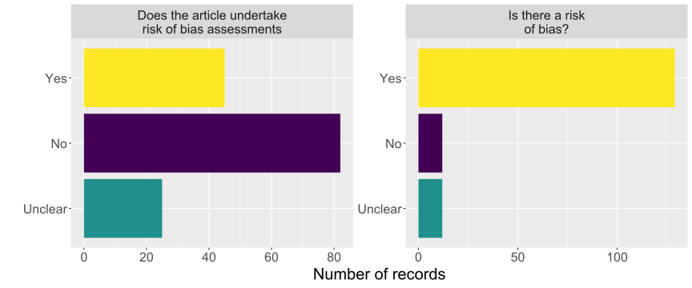
Det er i de fleste tilfeller uklart om de systematiske litteratursammenstillingene har tilstrekkelig stort dataomfang til å konkludere som de har gjort, og om de har vært gode nok til å vurdere eller analysere kildene til variasjon mellom de individuelle studiene som de baserer seg på (Figur 35).
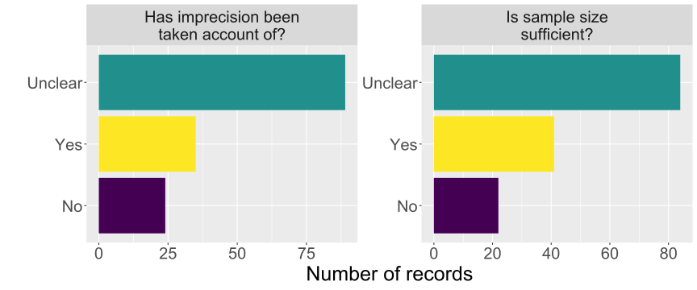
Det har i de fleste tilfeller vært vanskelig å vurdere om de systematiske litteratursammenstillingene har vist en konsistent (ensartet) retning på den effekten de har studert, og i hvor stor grad konfidensintervallene på de individuelle studiene overlapper (Figur 36).
Publiseringsskjevhet
Publikasjonsskjevhet betyr i prinsippet at kun positive “signifikante”) funn blir publisert, slik at den eksisterende litteraturen ikke gir et godt bilde på hvor sterk effektene egentlig er. Det er utviklet metoder for å undersøke og avdekke slik skjevhet, og vi har undersøkt hvorvidt de systematiske litteratursammenstillingenen har vurdert den potensielle systematiske publiseringsskjevheten (publication bias) i datamaterialet og ser at overvekten av studiene ikke har vurdert dette (Figur 37).
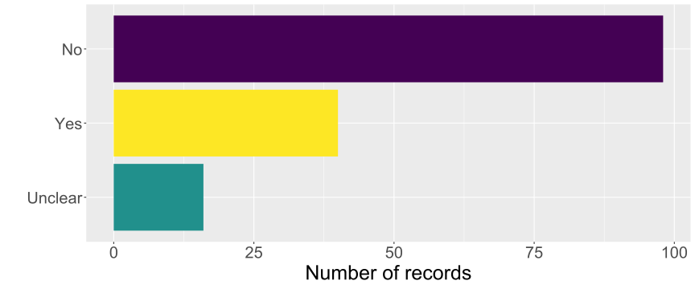
Tiltro til resultatene i de systematiske litteratursammenstillingene
Basert på en systematisk gjennomgang av kriterier for å vurdere kvaliteten til de ulike systematiske litteratursammenstillingene i vårt datamateriale, ser vi at tiltroen eller sikkerheten til resultatene fra disse studiene oftest kan sies å være lav eller moderat, og det er relativt få litteratursammenstillinger vi har høy tillitt til resultatene (Figur 38).
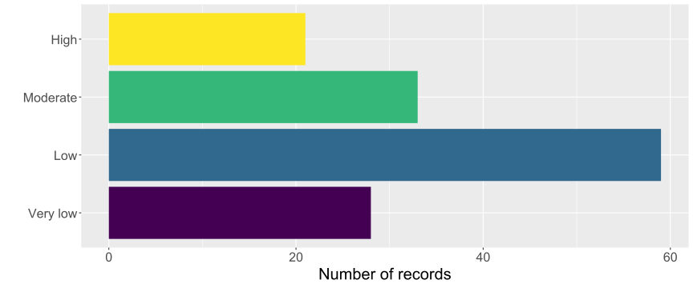
3.6 Sammenstilling av data fra alle inkluderte artikler fra Norge, Sverige og Finland
I denne seksjonen vil vi presentere resultater fra alle inkluderte artikler fra Norge, Sverige og Finland. Siden disse artiklene kun har gått gjennom første screening men ikke er kodet, er det mer begrenset hva vi kan lese ut av disse artiklene. Vi har her benyttet oss av endel bibliometriske analysemetoder og informasjon fra åpne kilder (for eksempel OpenAlex, som er en database med data og metadata som omhandler den vitenskapelige litteraturen).
Som det framkommer av Figur 39 er den inkluderte litteraturen publisert en en rekke ulike tidsskrifter. Selv om tidsskriftene i seg selv ikke gir et detaljert bilde på hva artiklene omhandler er to av tidsskriftene på listen (Forest ecology and management og Scandinavian journal of forestry) rene skogbrukstidsskrifter, mens Agriculture, ecosystems and environment er et interdisiplinært tidsskrift som fokuserer på interaksjonen mellom landbruk og økosystemer. Flere av de øvrige tidsskriftene på listen er generelle økologiske tidsskrifter, og ingen av tidsskriftene er primære samfunnsvitenskapelige tidsskrifter.
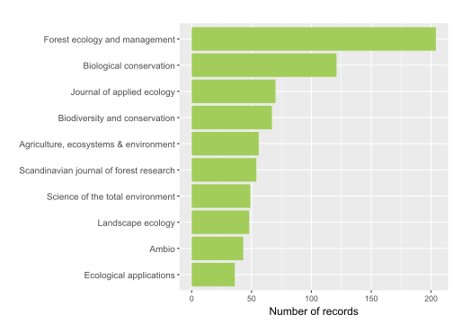
Vi gjorde også en enkel analyse av hvilke nøkkelord som vanligvis opptrer samlet, og så hvordan dette fordelte seg mellom ulike nøkkelord (Figur 40). En interessant observasjon er at studier av ‘økosystemtjenester’ ligger nærmere studier innenfor ‘business’ og ‘statsvitenskap’ enn de naturvitenskapelige økologiske studiene.
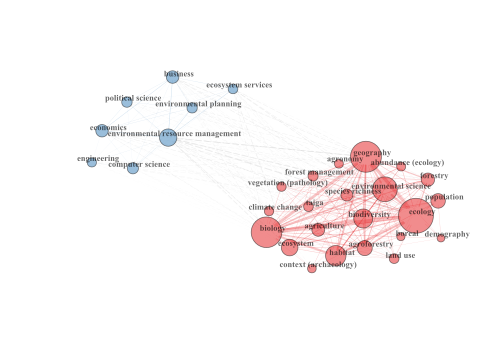
En nettverksanalyse av siteringsnettverkene viser videre at det er klare grupperinger i datasettet (Figur 41). Den største klyngen i figuren over representerer studier som direkte tar for seg effekten av en bestemt arealbruksendring på biologisk mangfold (for eksempel bevaringstiltak for jordbruksarealer). Den nest største klyngen representerer studier som tar for seg økosystemtjenester. Den tredje klyngen består av studier som er mer konseptuelle og diskuterer for eksempel “rewilding” eller verdsetting av naturen. Den siste klyngen (den minste) er studier på rein. Dette tyder på at reinstudier har en tendens til å sitere hverandre oftere enn å sitere mer generelle økologiske studier eller økosystemtjenester.

Vi undersøkte også hvilke tema som ble vanligere og sjeldnere over tid i det samlede materialet (Figur 42). Siden vi ikke har kodet dette materialet benyttet vi oss av åpent tilgjengelig informasjon om de enkelte studiene i disse analysene. Før 2005 var ord som “klima”, “biologisk mangfold”, “økosystem” og “tjenester” mindre vanlige i tittelen eller sammendraget av inkluderte studier enn etter 2005. Etter 2005 var ord som “skog”, “fragmentering”, mindre vanlige enn før 2005. Dette antyder at språket som brukes i titler og sammendrag har blitt mer fokusert på politikkrelevante buzzwords i stedet for habitater eller artstrekk. Disse analysene gjør dog ikke at vi kan konkludere med sikkerhet at tema for forskningen faktisk har endret seg.
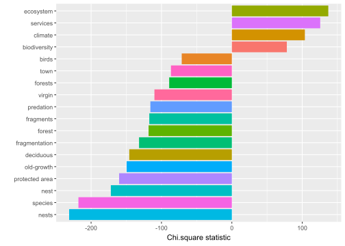
3.7 Et beslutningsstøtteverktøy basert på inkluderte artikler fra Norge
Vi kan vurdere den konseptuelle utviklingen av et forskningsfelt ved hjelp av bibliometrisk nettverksanalyse (Cobo et al. 2011). Nærmere bestemt vurderer en slik nettverksanalyse forholdet mellom nøkkelord i et sett med dokumenter. Det hjelper med å identifisere nøkkeltemaer, deres sammenhenger og hvordan de endrer seg over tid, og gir verdifull innsikt for forskere og beslutningstakere når man skal prioritere ny forskning.
Basert på metoden beskrevet i Cobo et al. (2011) hentet vi først nøkkelord (keywords) fra alle de inkluderte artiklene fra Norge. Vi opprettet deretter en såkalt “Co-Ocurrence Matrix” som teller hvor ofte hvert par med nøkkelord forekommer samtidig i dokumentene. Matrisen for samtidig forekomst ble deretter konvertert til en nettverksgraf, der nøkkelord er noder forbundet med kanter som representerer deres samtidige forekomst.
Ved å bruke «walktrap-algoritmen» blir nøkkelord gruppert i klynger. Walktrap-algoritmen er en fellesskapsdeteksjonsmetode som bruker tilfeldige ruter for å utforske nettverket og identifisere klynger av noder som er tettere koblet til hverandre enn til resten av nettverket. Ved å simulere tilfeldige ruter og slå sammen noder basert på deres samtidige forekomstfrekvenser, avslører det effektivt fellesskapsstrukturen i nettverket. Dette gjør det spesielt nyttig for å analysere komplekse nettverk.
Hver klynge representerer et tematisk område innenfor forskningsfeltet (hvor nøkkelord innenfor samme klynge forekommer oftere). Vi benytter to egenskaper til å beskrive de ulike tema. Sentralitet og tetthet. Sentraliteten til hvert tema indikerer viktigheten av temaet for hele nettverket. Høy sentralitet tilsier at temaer er godt integrert i forskningsfeltet. De fungerer som broer mellom ulike tema og regnes ofte som kjerne- eller «mainstream» -temaer. Temaer med lav sentralitet er mer isolerte og har færre forbindelser til andre temaer. Dette kan være nye tema eller nisjeområder som ennå ikke er bredt integrert i det bredere forskningsfeltet. Tetthet måler den interne sammenhengen i et tema. Den indikerer hvor sterkt nøkkelordene innenfor et bestemt tema er knyttet til hverandre. Det gjenspeiler i hvilken grad et tema er selvstendig eller fokusert. Temaer med høy tetthet har sterke interne forbindelser, noe som betyr at nøkkelordene i temaet ofte forekommer sammen med hverandre. Disse temaene er godt utviklet og internt sammenhengende, og representerer ofte spesialiserte forskningsområder. Temaer med lav tetthet har svakere interne forbindelser. Nøkkelordene innenfor disse temaene forekommer ikke like ofte, noe som indikerer at temaet kan være bredere, mindre fokusert eller fortsatt i utvikling.
I figuren under har vi visualisert nettverket i et strategisk diagram, hvor temaenes sentralitet og tetthet er kategorisert ved deres posisjon i kvadrantene.
Motor-tema (høy sentralitet, høy tetthet): Dette er tema som er viktige og godt utviklet, og som er sentrale for forskningsfeltet. De har høy grad av intern samhold og er bredt koblet til andre tema.
Grunnleggende og transverse tema (høy sentralitet, lav tetthet): Disse tema er sentrale med har mindre grad av internt samhold. De fungerer som broer mellom ulike forskingstema og kan dekke en større bredde i forskningen.
Nisjetema (lav sentralitet, høy tetthet): Disse temaene er spesialisert og har høy grad av internt samhold, men er ofte ikke godt integrert i det større forskningsfeltet. De representerer fokusert forskningstema.
Stigende eller dalende tema (lav sentralitet, lav tetthet): Disse temaene er minder utviklet. De kan være nye tema på veg opp eller eldre tema som har fått mindre fokus.

I Figur 43 er temaer indikert med et enkelt felles nøkkelord. Vi kan se at godt studerte temaer i Norge inkluderte artsrikhet (species richness) spesielt i sammenheng med skogforvaltning, rein (Rangifer tarandus) – her med fokus på villrein. Studier rundt habitatvalg (habitat selection) inkluderte studier på gaupe (Lynx lynx) og rådyr (Capreolus capreolus). Konflikt mellom mennesker og dyreliv rundt gjess og jordbruk er også godt studert.
Temaer som er stigende omfatter blant annet hyttebygging og bevaring av biologisk mangfold i forbindelse med klimaendringer, samt bærekraftig utvikling. Fremtidige scenarier for arealbruksendring (så vel som andre globale endringer) er også et felt i vekst. Studier rundt urfolk i sammenheng med arealbruksendring er underrepresentert i feltet.
4 Diskusjon
Vår systematiske sammenstilling av litteraturen har gitt en fyldig oversikt over hvilke tema vi har mye og lite forskningsbasert kunnskap om. Sammenstillingen skiller seg fra tidligere norske kunnskapssammenstillinger ved at vi identifiserer studier som dreier seg om effektene av arealbruk på natur og på naturgoder, i motsetning til kunnskapssammenstillinger som omfatter de to temaene hver for seg. Alle artikler fra Norge, samt systematiske internasjonale kunnskapssammenstillinger, ble videreført til en andre runde med screening samt datakoding. Som det framgår av resultatkapittelet er det stor forskjell på hvor godt de ulike temaene er dekket av kunnskapskartet. Det er også stor variasjon i hvor mye forskning som har blitt gjennomført i de ulike fylkene. Merk at vi da snakker om hvor studiene er gjennomført, ikke hvor forskningsgruppa holder til.
Et gjennomgående trekk fra vår sammenstilling av litteraturen fra Norge er at en dominerende andel av den naturvitenskapelige forskningen er basert på empiriske data samlet inn i felt eller ved hjelp av moderne, ikke-feltbasert teknologi som fjernmåling. I likhet med hovedtyngden av internasjonale studier innenfor økologisk forskning (Estes et al. 2018; Nilsen et al. 2020), fant vi at den største andelen av forskningen baserer seg på lokale eller regionale studier, for eksempel fra en del av en kommune eller et fylke, eller et større fjellområde. Det er relativt få studier som dekker hele landet. Dette kan være en begrensning siden mange vurderinger (f.eks. rødlisting av arter, rapportering om tilstand og utvikling i naturen til internasjonale indekser osv.) gjerne er basert på landsdekkende trender og status. Siden det i Norge er mange overvåkningsprogram som i prinsippet dekker hele landet (for eksempel norsk hekkefuglovervåkning TOV-e, Rovdata, og overvåkning av liryper gjennom Hønsefuglportalen) er dette funnet noe overraskende og kan indikere at det er et uutnyttet potensial for flere analyser over stor romlig skala.
Et annet veldig tydelig funn er at en stor andel av den naturvitenskapelige litteraturen baserer seg på relativt “svake” forsøksdesign. Liknende resultater har blitt rapportert tidligere fra internasjonale studier (Christie et al. 2019; Nilsen et al. 2020). Når vi skriver svak mener vi her design som ikke nødvendigvis er godt egent til å avdekke årsak-virkningssammenhenger (Christie et al. 2019). Som det framgår av Figur 8 er forskningen vi har kategorisert fra Norge i veldig stor grad dominert av det vi har kategorisert som “kontroll-påvirkning” (Control-impact) og “etter-design” (After), med et visst innslag av “før-etter design” (Before-after). Særlig designtypen “etter” mangler styrke til å si noe om årsak-virkning, siden man ikke har et kontrollområde å sammenlikne effekten av intervensjonen (arealbruken) mot. Men også for studiedesign av typen “kontroll-påvirkning” og før-etter er det velkjent at slutningene kan være utsatte for bias og skjevhet. Nyere statistiske metoder basert på “causal inference”, som er egnet til å isolere effekten av enkeltvariabler samtidig som de kontrollerer for effekten av andre variabler, har blitt utviklet for i større grad å kunne trekke slutninger om årsak-virkning også fra slike studiedesign (Law et al. 2017). Vi har ikke hatt kapasitet til å undersøke hvor ofte disse har blitt benyttet i den litteraturen vi har kategorisert, men basert på vår generelle kjennskap til forskningsfeltet er det all grunn til å anta at disse sjeldent benyttes. I motsetning til studiedesignene beskrevet over har studiedesignene randomisert-kontrollert forsøk (Randomised controlled trials - RCT) og tildels “før-etter-kontroll-impact” (Before-after-controll-impact - BACI) mye større styrke til å avdekke årsak-virkningsforhold og unngå skjevhet i resultatene (Christie et al. 2019). Særlig er RCT regnet som gullstandarden innenfor naturvitenskapelig forskning, og det er en påfallende mangel på slike studier i vår gjennomgang (med noen svært gode unntak). En utfordring med RCT og BACI-design knyttet til å forstå effekter av arealbruk på ulike mål for biologisk mangfold er at de ofte er ressurskrevende og ofte må gjennomføres over en betydelig romlig- og tidsmessig skala for å gi sikker inferens. Utfordringen er at det ofte er vanskelig, dyrt eller ikke etisk forsvarlig å gjennomføre kontrollerte forsøk av effektene av arealbruk på natur og naturgoder. Antall behandlinger og replikat blir nødvendigvis få, og det kan være vanskelig å kontrollere og isolere faktorer i forsøkene. Dette er også en følge av hvordan forskningen i dag er finansiert, hvor prosjektene normalt finansieres for en relativt kort periode og de er ofte relativt små. Når det er logistikkmessig eller etisk ikke mulig å gjennomføre kontrollerte eksperimenter bør naturlige eksperiemnter og kvasi-eksperimenter kan også benyttes i større grad til å dra slutninger over større landområder når det er logistikkmessig umuligå gjennomføre randomiserte eksperimenter (Nilsen et al. 2020).
For de inkluderte systematiske litteratursammenstillingene gjorde vi en vurdering av kvaliteten basert på modifiserte GRADE-vurderinger (se Metoder). Denne vurderingen avdekket at en relativt liten andel av de eksisterende sammenstillingene var basert på best mulige metoder for evidenssyntese. Et hovedtema som gikk igjen i de systematiske litteratursammenstillingene og metaanalysene vi vurderte til å være av høyeste kvalitet var at de rapporterte at de hadde vanskeligheter med å vurdere primærlitteratur på grunn av lav “validitet” og heterogen rapportering av resultater i primærlitteraturen. Innen økologi er det ofte utfordrende å sammenstille bevis fra flere studier på grunn av inkonsekvente målinger og rapportering av resultater. Denne mangelen på standardisering hindrer muligheten til å ta informerte beslutninger. I medisin har dette problemet blitt løst ved å etablere konsensus om konsekvente måter å rapporterte resultater. I økologi har dette konseptet bare blitt brukt på en begrenset måte (se for eksempel i Reed et al. (2022)), og vi tror miljøforskningen her med fordel kan dra nytte av erfaringer fra den medisinske forskningen.
De eksisterende systematiske litteratursammenstillingene var i stor grad fokusert på anvendte emner (skogforvaltning og landbruk; - se Figur 32) som er forventet da disse metodene er godt egnet til å forstå effekten av forvaltningsintervensjoner. Flertallet av de eksisterende systematiske litteratursammenstillingene var systematiske kart. Fokuserte systematiske oversikter og metaanalyser var begrenset, men innenfor denne gruppen var det flere studier som undersøkte arealbruksendring innenfor landbruket.
Et annet gjennomgripende funn i vår gjennomgang av primærlitteraturen er at det er en relativt beskjeden andel av litteraturen som har gjort data og kildekode åpent tilgjengelig etter at studiene har blitt publisert. Liknende funn har blitt rapportert tidligere fra internasjonale studier (se diskusjon i Nilsen et al. (2020)). Totalt hadde ikke mer enn 18 % åpne data, mens kun 4 % hadde åpen kildekode for analyser som er gjennomført. Åpen vitenskap har vært et sentralt tema de siste ti årene, og har vokst fram som en “bevegelse” på grunn av en erkjennelse om at dette er avgjørende for at samfunnet skal ha tillit til forskningen. Vår gjennomgang viser riktignok en bedring (Nilsen et al. 2020), og i årene etter 2016 har det vært en markant økning i andelen artikler som åpent publiserer forskningsdataene som ligger til grunn. Men også i denne perioden er andelen under 50% når gjelder data, og under 20% når det gjelder kildekode. Denne situasjonen vil ikke nødvendigvis forbedres av seg selv, men krever kontinuerlig jobb både innenfor forskningsmiljøene selv, men også fra institusjoner som finansierer forskningen.
Selv om vi innenfor naturvitenskapen søker å finne generelle og allmenngyldige svar på forskningsspørsmål ser vi ofte at økologien er kontekstavhengig, og at anvendt forskning derfor ofte må skje i geografisk nærhet av der den skal benyttes (jfr. (Nekola and White 1999). Vår gjennomgang av litteraturen fra Norge har avdekket at det er stor variasjon knyttet til hvor hyppig feltstudier gjennomføres i de ulike fylkene i Norge. Særlig er det gjennomført mange studier i Innlandet, Akershus, Trøndelag og Vestland. Vi antar at studier fra sammenlignbare naturområder våre nærmeste naboland vil være av høy relevans for norske forhold. I videre arbeid med f.eks. systematiske litteraturgjennomganger, bør det derfor vurderes om litteratur fra øvrige skandinaviske land bør prioriteres.
4.1 Generell vurdering av litteraturen som omfatter effekter av arealbruk og arealbruksendringer på biologisk mangfold og økosystemtjenester
Vår sammenstilling av den naturvitenskapelige litteraturen fra Norge avdekket hvilke temaer som har vært gjenstand for mest forskning i perioden 1986 - 2024. I det materialet vi fanget opp i vår systematiske litteraturgjennomgang var det tre økosystemer som klart skilte seg ut når det gjelder mengde forskning (Figur 12). Spesielt mye forskning er gjennomført i skog, og mye av denne forskningen har naturlig nok har fokusert på effekter av ulike former for skogbruk på ulike biodiversitetsvariabler og økosystemtjenester. Videre har en betydelig mengde forskning blitt gjennomført i semi-naturlig økosystemer, i særlig grad i semi-naturlig enger. Her er det flere studier som fokuserer på hvordan endret bruk og hevd påvirker disse systemene. Vårt søk fanget også opp et relatitvt høyt antall artikler som har fokusert på fjelløkosystemer. De andre hovedøkosystemene er langt dårligere dekket, og det er verdt å merke seg at selv om det har vært mye fokus på myrenes betydning både for det biologiske mangfoldet og ikke minst karbonlagring, så fanget vårt søk opp et relativt lavt volum av forskning på hvordan arealbruk og arealbruksendringer påvirker, eller har påvirket, dette økosystemet.
Også når det gjelder hvilke former for arealbruk og arealbruksendringer vi har kunnskap om effekten av, ser vi at det er stor variasjon i forskningsinnsats. På et overordnet plan (Figur 14) er det størst volum av forskning knyttet til ulike former for landbruk (inkludert både beitebruk og andre former for landbruk) og høsting og bruk av biologiske ressurser (inkludert skogbruk og jakt og fiske). For andre hovedformer for arealbruk, inkludert ulike former for energiproduksjon og samferdsel, og ulike former for bruk av landskapet til reiseliv, fritidsaktiviteter og friluftsliv (“residential”) er det vesentlig mindre forskning tilgjengelig. Dersom vi bryter opp arealbruken i finere oppdeling er det effektene av skogbruk som har klart størst volum av forskning (Figur 15), etterfulgt av effekter av beiting og landbruk mer generelt. Det er påfallende få naturvitenskapelige studier som omhandle effekter av sentrale virkemidler innen naturforvaltningen som naturvern og restaurering.
Vi kartla hvilke responsvariabler de ulike studiene fokuserte på, og delte disse inn i henhold til klassifiseringssystemet “Essential Biodiversity Variables” (EBV) (Pereira et al. 2013). Vår gjennomgang av litteraturen viste at det var særlig tre variabler som er mye studert, henholdsvis arters utbredelse (Species distribution), arters antall (Species abundance) og taksonomisk diversitet (Taxonomic diversity). Den siste variabelen inkluderer ulike former for diversitetsmål, inkludert artsantall. De to første variablene blir typisk studert for en eller et fåtall arter i samme studie, mens studier som fokuserer på diversitet typisk fokuserer på diversiteten i hele plantesamfunn eller blant leddyr i et samfunn (virvelløse dyr, med insekter, edderkoppdyr og krepsdyr som de største gruppene). Det er også et ganske betydelig (dog langt mindre) volum av forskning på ulike egenskaper (Species traits) som beskriver individer eller arter (se her for en beskrivelse av samtlige EBV-er). Særlig gjelder dette studier av arters bevegelsesmønster (Movement) og habitatseleksjon under ulike former for arealbruk og menneskelige forstyrrelser. Inkludert i denne kategorien finner vi også en rekke studier av hvordan menneskelig aktivitet og infrastruktur påvirker villreinens arealbruk og bevegelsesmønster, og hvordan gaupenes bevegelsesmønster henger sammen med ulike former for arealbruk. Ser vi på arter som er inkludert hyppigst i vår litteraturgjennomgang finner vi også at disse to artene er hyppigst forekommende. Videre har vi også identifisert et betydelig antall studier som undersøker hvordan ulike former for arealbruk påvirker reproduksjon og overlevelse hos populasjoner. I kontrast til variablene over er det relativt få studier som fokuserer på effekter på hele økosystemer (struktur og/eller funksjon) og det er svært få studier som har undersøkt effekter av arealbruk på genetisk variasjon og differensiering.
Når det gjelder effektene av arealbruk og arealbruksendringer på økosystemtjenester, var det flest studier av effektene av arealbruksendringer på tjenestene karbonfangst og -lagring, fulgt av ulike forsynende tjenester som høsting av naturressurser i form av landbruk, jakt og fiske. Også andre regulerende tjenester var dekket med flere studier i materialet, men færre studier fokuserte på effektene av arealendringer på opplevelses- og kunnskapstjenester (kulturelle økosystemtjenester). Det kan være overlapp i måten økosystemtjenester er registrert på i materialet.
4.2 Sentrale funn knyttet til den samfunnsvitenskapelige litteraturen
Litteratursammenstillingen vår viste at kun 25% av studiene totalt omhandler de samfunnsrelevante temaene konflikter, forvaltningsverktøy eller styring mer generelt (governance), og at kun 12% av den samlede litteraturen bruker samfunnsvitenskapelige metoder. Gjennomgangen av den samfunnsrelaterte litteraturen viste videre hvilke tema som det har vært forsket mest på i perioden 1986-2024. Her fant vi at styring og forvaltningsverktøy har fått betydelig mer oppmerksomhet enn konflikter. Et viktig funn her er også at under halvparten (44%) av studiene på disse samfunnsmessige temaene ble utført med samfunnsvitenskapelige metoder. I en tid hvor internasjonale kunnskapsinstitusjoner som IPBES og IPCC vektlegger betydningen av både rent samfunnsvitenskapelig og tverrfaglig kunnskap i innsatsen for å oppnå internasjonalt avtalte miljømål, er det verdt å merke seg i hvor liten grad slik kunnskap ble identifisert gjennom søket vårt. Noe av bakgrunnen for den økte anerkjennelsen av samfunnsvitenskap i miljøspørsmål ligger i erkjennelsen av at årsaken til miljøproblemene vi står overfor, samt potensielle måter å håndtere de på, i stor grad er samfunnsmessige. Overordnet kan vi si at kunnskapen sammenstillingen vår avdekket om de samfunnsmessige forholdene knyttet til effekter av arealbruk og arealbruksendringer på naturmangfold og økosystemtjenester er mangelfulle, og at de i liten grad gir oss bred innsikt i hvordan man kan forstå og agere på konflikter, forvaltningsverktøy og styring på temaet.
Av de samfunnsvitenskapelige studiene vi gjennomgikk ser vi en klar overvekt av bruken av intervjuer og dokumentstudier. Det er også identifisert en del studier som bruker spørreundersøkelser, mens det er få studier som bruker deltagende metoder, det vil si metoder som har fokus på involvering av flere ulike aktører. Samlet sett for de samfunnsrelaterte studiene fant vi at et klart flertall hadde en analytisk tilnærming med fokus på styring og forvaltning, det vil si en ganske direkte undersøkelse av eksisterende og potensielle nye verktøy og former for styring og forvaltning. Dette er i tråd med funnet over om at en stor andel av litteraturen hadde forvaltningsverktøy og styring som tema. Samtidig viste sammenstillingen at flere ulike analytiske tilnærminger som også er relevante for styring, forvaltningsverktøy og konflikter har blitt tatt i bruk, men da i mindre grad. Spesielt vil vi her trekke fram de analytiske tilnærmingene knyttet til gjennomgripende endringer (transformasjoner), tverrsektorielle prosesser, bærekraft, kunnskap, verdier, maktrelasjoner og deltagende/deliberative prosesser, som vi har funnet gjennomgående lite kunnskap om på sammenstillingens tema, men som framheves i den internasjonale forskningen (se for eksempel Díaz et al. (2019)).
Sammenstillingen viser at den samfunnsrelevante litteraturen dekker mange ulike økosystemer, og at spesielt mange omhandler skog, fjell og seminaturlige økosystemer. Dette synes i noen grad å være i tråd med den samfunnsmessige betydningen disse økosystemene blir tillagt i politikk og samfunnsdebatt, men henger nok også sammen med at enkelte arter og miljøutfordringer i perioder har fått spesielt mye oppmerksomhet i forskningen. Gjennomgangen viste videre at kun et fåtall av de samfunnsrelaterte studiene tok for seg effekter av arealbruk og arealendringer på karbonlagring i tillegg til på naturmangfold. Videre var arealbruk som karakteriseres av aktiv bruk og uthenting av ressurser, som for eksempel jordbruk, jakt, fiske og sanking, samt turisme hyppig studert, i tillegg til bolig- og næringsutvikling inkludert fritidsboliger og hytter. Arealbruken som oftest forekommer i litteraturen, men som ikke karakteriseres av uthenting av ressurser eller arealinngrep, er naturvern. Fokuset på henholdsvis vern og aktiv arealbruk gjenspeiler sentrale samfunnsdebatter og tidvis motstridende politiske målsetninger, som også ofte er sektorspesifikke. Vi registrerer at søket vårt identifiserte overraskende få samfunnsrelaterte studier på noen tema som har fått mye politisk og samfunnsmessig oppmerksomhet de siste årene, slik som effekter av arealbruk og arealbruksendringer på karbonlagring i økosystemer samt arealbruk og arealbruksendringer knyttet til vindkraft.
4.3 Begrensninger i litteraturstudien
Som alle studier har også vår studie en del begrensninger. Den første begrensningen ligger i selve konseptet systematisk kart (James et al. 2016). Formålet her er å kartlegge og sammenstille den tilgjengelige litteraturen, ikke å gå i dybden eller å lese ut resultater fra de enkelte studiene. Vår kartlegging av litteraturen viser slik sett ikke hva vi konkret vet om effekter av arealbruk og arealbruksendringer på biologisk mangfold og økosystemtjenester, kun hva det er forsket på. Å skulle gå inn i detaljer på alle artiklene innenfor et så bredt fagfelt er i praksis ikke mulig, og ville krevd en langt smalere problemstilling. En tilsvarende begrensning med systematiske kart er at det heller ikke gjøres en vurdering av kvaliteten på den inkluderte primærlitteraturen (critical apraisal). Vår sammenstilling av litteraturen gir imidlertid en god oversikt over tema det det har vært forsket på, og gir et godt utgangspunkt for systematiske reviews og metaanlyser på utvalgte deler av materialet. Vår studie må derfor oppfattes som en oversikt over hva det er forsket på innenfor et tematisk område, og på hvilken måte det forskes, snarere enn hva forskningen konkluderer med.
En annen utfordring med å kartlegge litteraturen innenfor et såpass bredt tema er at det kan oppstå uklarheter knyttet til avgrensningen av søk og inkluderingskriterier. Vi jobbet mye med begge disse faktorene i en tidlig fase av prosjektet, og baserte både søkestrategi og inkluderingskriterier på en detaljert protokoll. Denne protokollen ble oppdatert en rekke ganger i en tidlig fase, både basert på input fra en større ekspertgruppe og samfunnsaktører, men også basert på erfaringer reviewgruppa gjorde seg i en tidlig fase. Likevel vil det være noen uklarheter knyttet til hvorvidt enkeltstudier skal inkluderes eller ikke. Vi gjorde gjentatte beregninger av graden av enighet innad i reviewgruppa, og denne lå konsekvent høyere enn 0.72. Selv om dette er godt innenfor det som er regnet som akseptabelt betyr det også at det vil være en del studier som reviewgruppa har vurdert ulikt når det med tanke på inkludering vs ekskludering. For artikler som ble screenet i en tidligfase og hvor vi hadde flere som screenet samme artikkel løste vi opp i disse uenighetene. For mesteparten av datamaterialet har imidlertid kun en person vurdert hvorvidt studiet skal inkluderes eller ekskluderes.
Før vi gjennomførte søket gjorde vi mange testsøk, med ulik oppbygging og grad av detaljrikdom. Dette er nærmere beskrevet i protokollen (Nilsen et al. 2024). Det søket vi endte opp med er en avveining mellom flere forhold, og det resulterte i treff på et stort antall artikler. Flere runder med prøvesøk ble gjennomført før den endelige søkestrategien ble vedtatt. Å bygge lange søkestrenger til systematiske søk er en omstendelig og iterativ prosess hvor målet er å finne en ideell balanse mellom relevans og antall treff. Siden emnet i dette tilfellet var såpass vidt, endte vi opp med å dele inn søketermene i to hovedbolker (termer relatert til arealbruk og termer relatert til effekt) – i tillegg søkeord for Norge, Sverige eller Finland eller avgrenset på review. For at en artikkel skulle fanges opp av søket, måtte den ha minst ett emneord fra hver av hovedbolkene blant emneord, tittel eller sammendrag. Prøvesøk med tre hovedbolker i stedet for to ble også forsøkt for å spisse søket, men i disse tilfellene forsvant mange relevante artikler ut. For å teste søkets treffsikkerhet, hadde vi et knippe forhåndsdefinerte benchmark-artikler som det var ønskelig at søket skulle fange opp. Disse ble blant annet brukt til å identifisere flere emneord og til å justere søket. I det endelige søket ble 13 av de 15 benchmark-artiklene fanget opp. Den ene av de to som manglet ble fanget opp i de to hovedbolkene i søket, men den forsvant ut da den ikke nevner Norge, Sverige eller Finland. Den siste ble ikke fanget opp fordi ingen av termene relatert til arealbruk var nevnt i tittel/emneord/sammendrag. Det hadde vært mulig å fange den opp ved å legge til flere termer, men å legge til store termer som «ecosystem*» ville ført til en stor økning i antall treff og flere artikler til screening enn det var ressurser til i prosjektet.
Vi hadde opprinnelig planlagt dekke både den vitenskapelige litteraturen og grålitteraturen (norske rapporter osv). Siden omfanget av vitenskapelig litteratur som ble fanget opp av vårt søk var så stort måtte vi imidlertid se bort fra den grå litteraturen i vår gjennomgang. Hvor mye av denne litteraturen som ville blitt inkludert er vanskelig å vurdere. Det er sannsynlig at mye av denne litteraturen i større grad beskriver arealbruk og endringer i arealbruk, og i mindre grad evner å vise hvordan dette påvirker det biologiske mangfoldet. En grunn til at vi kan gjøre en slik antakelser er at forsøk som bygger på studiedesign av høy kvalitet (se over) er kostbare og ressurskrevende, og fordi forskere så vel som forskningsinstitusjoner har egeninteresse av å publisere slik forskning vitenskapelig, snarere enn som grå litteratur. Før også denne delen av litteraturen er gått gjennom skal man imidlertid være varsom med å trekke slike slutninger.
Til sist er det en mulig begrensning at vi måtte utelate ca 10% av artiklene uten at vi hadde kapasitet til å kjøre en full manuell screening. Merk at vi gikk gjennom all litteratur som hadde en høy stjerne i Rayyans rangeringsssytem basert på kunstig intelligens, slik at artikler som gjensto hadde lavere sannsynlighet for å være aktuelle. Denne modellen “lærer” løpende hvilke studier som sannsynligvis bør inkluderes, og hvilke studier som sannsynligvis er irrelevante. Algoritmene i applikasjonen sorterer kandidatene til screening løpende basert på læringsprosessen. Slike algoritmer er, i likhet med all kunstig intelligens, sårbare for bias og usikkerhet. Vi screenet også alle artikler hvor “Norge” eller “Norway” dukket opp tittel, nøkkelord, sammendrag eller adressen til forfatterne. For å få et estimat på hvor mye av denne litteraturen som ville passert første runde med screening tok vi et tilfeldig utvalg på 100 av de gjenværende artiklene og screenet disse. Av disse vurderte vi at ca 10% var innenfor våre inkluderingskriterier, men ingen var fra Norge. Mange av de irrelevante artiklene i denne kategorien handlet om Norway Spruce (Picea abies), noe som illustrerer problemet med å skille signalet fra støyen i slike søk. Vi antar derfor at det vil være få aktuelle artikler fra Norge som ikke ble screenet, men at det vil være en del aktuelle artikler fra Sverige og Finland.
4.4 Datamangler og kunnskapshull
I dette kapittelet vil vi presentere det vi mener er de viktigste kunnskapshullene vi har avdekket gjennom vår litteraturgjennomgang av litteraturen knyttet til Effekter av arealbruk og arealbruksendringer på biodiversitet, økosystemtjenester og karbonlagring i Norge. Vår vurdering er basert på en samlet tolkning av datamaterialet. Man må likevel være klar over at siden vi ikke har vurdert kvaliteten på de inkluderte primærstudiene kan det godt være tema som tilsynelatende er godt dekket men som består av studier av lav forskningsmessig kvalitet. Dette vil ikke vår gjennomgang være i stand til å avdekke. Datamanglene og kunnskapshullene vi har avdekket er oppsummert i kulepunktene under.
Det er generelt en mangel på godt designede eksperimenter (RCT og BACI). Slike eksperimenter er i utgangspunktet bedre egnet til å avdekke årsakssammenhenger enn de andre (svakere) studiedesignene. Dette betyr at de reelle effektene av arealbruk og arealbruksendringer på biodiversitet og økosystemstjenester ofte ikke er godt dokumentert. I mange tilfeller kan det være et alternativ å benytte seg av de “eksperimentene” som dannes av naturlige eller menneskesapte endringer som påvirker store arealer - såkalte kvasieksperimenter. Dette kan være større utbyggingsprosjekter eller andre planlagte areal(bruks)endringer, som kan betraktes som større “eksperimenter” på landskapsnivå, og som kan følges over tid (Haddad et al. 2015). Nyere statistiske metoder spesielt utviklet for å avdekke årsak-virkning har også et underutnyttet potensiale.
Litteraturen vi har gått gjennom er dominert av studier av lokal eller regional karakter, og det er får landsdekkende eller multinasjonale (f.eks. skandinaviske) studier i datamaterialet. Siden mange økologiske prosesser spiller seg ut over store arealer, og siden mye av den nasjonale biodiversitetsrapporteringen er basert på landsdekkende data er det et stort behov for flere studier som studerer effekter av arealbruk på nasjonal skala. Det er en rekke nasjonale overvåkningsprogrammer som kan være egnet til slike studier, og disse studiene kan også avdekke nye behov knyttet til nasjonal overvåkning. Denne type studier omfatter også bruk av simulering, modellering og fjernmålingsdata koblet med referansedata fra felt.
Særlig innenfor den naturvitenskapelige forskningen er det en mangel på studier som undersøker effekter av vern på det biologiske mangfoldet. Arealvern er et mye benyttet virkemiddel for å ta vare på naturverdier og det biologiske mangfoldet, men vår gjennomgang viser at den empiriske kunnskapen når det gjelder effekten av vern på biologisk mangfold og økosystemtjenester er relativt mangelfull. I lys av Naturavtalen er dette et sentralt og viktig kunnskapshull.
Innenfor naturvitenskapen er det også en stor mangel på studier som fokuserer på effekten av restaurering på ulike former for biologisk mangfold. Vi er nå inne i FNs tiår for restaurering, og det er et stort og udekket behov for å forstå hvorvidt ulike former for restaurering har de tilsiktede konsekvensene.
Både for å styrke vår mulighet til å gjenskape publiserte studier, og for å kunne gjøre bedre nytte av allerede innsamlede data, er det et stort behov for å øke omfanget av åpne data og åpen kildekode (dvs de skript og koder som ligger bak de publiserte resultatene). Selv om både de som finansierer forskning og tidsskriftene det publiseres i ofte forventer dette viser vår gjennomgang at en veldig stor andel av forskningen fortsatt ikke deler data og kode etter at studiet er publisert.
Det er stor forskjell når det gjelder hvor mange studier som har fokusert på de ulike essensielle biodiversitetsvariablene (EBV). Særlig er effekter av arealbruk og arealbruksendringer på genetisk sammensetning (genetisk diversitet, genetisk differensiering, effektiv populasjonsstørrelse, innavl) og ulike former for økosystemøkologi (både knyttet til funksjon og struktur) lite studerte tema.
Det er relativt få studier som har studert effekter av arealbruk og arealbruksendringer på karbonlagring i norsk natur. For å bedre forstå sammenhengen mellom natur- og klimaendringer er slike studier sentrale.
Det meste av forskningen vi har kartlagt er basert på korte tidsserier, og det er et behov for å sikre at forskning og forvaltning har tilgang til tidsserier med lang varighet. Dette er ofte nødvendig for å avdekke effekter i komplekse økosystemer, ikke minst siden mange av de prosesser som studeres skjer langsomt og over tid. Dette motiverer også for flere studer av scenarier for framtidige endringer i naturen som avdekker mulige utfallsrom for framtidige endringer i naturen.
Det er et generelt behov for mer forskning på effekten ulike former for kraftproduksjon og linjenett har på biodiversitet og økosystemtjenester. Det finnes studier av de ulike formene for kraftproduksjon, men overordnet viser vår gjennomgang av litteraturen at det er relativt begrenset volum på forskningen gitt betydningen dette vil få framover.
Det er en svært stor forskjell i forskningsvolum mellom de ulike typene hovedøkosystemer. Generelt er det lite forskning på effekter av arealbruk og arealbruksendringer i kystnære områder og strandsonen, og tilsvarende lite for myr og våtmark. Våtmark er viktige økosystemer både for biodiversitet og karbonlagring.
Innenfor den samfunnsvitenskapelige forskningen er det få studier som har fokusert på enkelte tema som har fått mye politisk oppmerksomhet de siste årene, inkludert effekter av arealbruk og arealbruksendringer på karbonlagring i økosystemer og effekter av vindkraft.
Innenfor samfunnsforskningen er det også få studier som benytter analytiske tilnærminger knyttet til gjennomgripende endringer (transformasjoner), tverrsektorielle prosesser og bærekraft. Dette er til tross for at disse fremheves i den internasjonale samfunnsfaglige litteraturen.
Nyere kartlegginger har avdekket at betydelige områder er planlagt til hyttebygging i tiden framover. Vår kartlegging viser at det er et relativt lite antall forskningsartikler som eksplisitt har undersøkt effekter av hytter og hyttebygging på det biologiske mangfoldet og økosystemtjenester.
Det er en stor variasjon mellom de ulike fylkene med tanke på hvor mye forskning som er gjennomført. Siden resultater fra økologisk forskning ofte er kontekstavhengig kan det være fornuftig å vurdere om forskningsinnsatsen bør styrkes i de deler av landet hvor det er få studier som fokuserer på effekter av arealbruk og arealbruksendringer på biologisk mangfold og økosystemtjenester.
Generelt finner vi at det er et udekket behov for systematiske litteratursammenstillinger og metaanalyser på mer avgrensede tema, som baserer seg på de best tilgjengelige metoder for slike synteser - inkludert en kritisk vurdering av de enkelte artiklene som danner grunnlag for syntesen. Vår sammenstilling av litteraturen på et bredt felt kan danne utgangspunkt for slike analyser på et smalere tema.
5 Referanser
References
Andreassen, L.M. 2022. Breer og fonner i norge. NVE Rapport 3/2022. https://publikasjoner.nve.no/rapport/2022/rapport2022_03.pdf.
Artsdatabanken. 2018. Norsk rødliste for naturtyper 2018. Artsdatabanken. https://www.artsdatabanken.no/rodlistefornaturtyper.
Artsdatabanken. 2021. Norsk rødliste for arter 2021. Artsdatabanken. https://artsdatabanken.no/lister/rodlisteforarter/2021.
Aspøy, H., and Stokland, H. 2022. Segmented forest realities: The ontological politics of biodiversity mapping. Environmental Science & Policy 137: 120–127. doi:10.1016/j.envsci.2022.08.015.
Aune, S., Bryn, A., and Hovstad, K.A. 2018. Loss of semi-natural grassland in a boreal landscape: Impacts of agricultural intensification and abandonment. Journal of Land Use Science 13(4): 375390. doi:10.1080/1747423X.2018.1539779.
Bouyer, Y., San Martin, G., Poncin, P., Beudels-Jamar, R.C., Odden, J., and Linnell, J.D.C. 2015. Eurasian lynx habitat selection in human-modified landscape in norway: Effects of different human habitat modifications and behavioral states. Biological Conservation 191: 291–299. doi:10.1016/j.biocon.2015.07.007.
Breidenbach, J., Granhus, A., Hylen, G., Eriksen, R., and Astrup, R. 2020. A century of national forest inventory in norway informing past, present, and future decisions. Forest Ecosystems 7(1). doi:10.1186/s40663-020-00261-0.
Bryn, A., and Potthoff, K. 2018. Elevational treeline and forest line dynamics in norwegian mountain areas – a review. Landscape Ecology 33: 1225–1245. doi:10.1007/s10980-018-0670-8.
Carrick, J., Abdul Rahim, M.S.A.B., Adjei, C., Ashraa Kalee, H.H.H., Banks, S.J., Bolam, F.C., Campos Luna, I.M., Clark, B., Cowton, J., Domingos, I.F.N., Golicha, D.D., Gupta, G., Grainger, M., Hasanaliyeva, G., Hodgson, D.J., Lopez-Capel, E., Magistrali, A.J., Merrell, I.G., Oikeh, I., Othman, M.S., Ranathunga Mudiyanselage, T.K.R., Samuel, C.W.C., Sufar, E.K., Watson, P.A., Zakaria, N.N.A.B., and Stewart, G. 2019. Is planting trees the solution to reducing flood risks? Journal of Flood Risk Management 12(S2): e12484. doi:https://doi.org/10.1111/jfr3.12484.
Chen, J., Chen, J., Liao, A., Cao, X., Chen, L., Chen, X., He, C., Han, G., Peng, S., Lu, M., Zhang, W., Tong, X., and Mills, J. 2015. Global land cover mapping at 30m resolution: A POK-based operational approach. ISPRS Journal of Photogrammetry and Remote Sensing 103: 7–27. doi:10.1016/j.isprsjprs.2014.09.002.
Christie, A. P., T. Amano, P. A. Martin, G. E. Shackelford, B. I. Simmons, and Sutherland., W.J. 2019. Simple study designs in ecology produce inaccurate estimates of biodiversity responses. Journal of Applied Ecology 56: 2742–2754. doi:10.1111/1365-2664.13499.
Cobo, M.J., López-Herrera, A.G., Herrera-Viedma, E., and Herrera, F. 2011. An approach for detecting, quantifying, and visualizing the evolution of a research field: A practical application to the fuzzy sets theory field. Journal of informetrics 5(1): 146–166. doi:10.1016/j.joi.2010.10.002.
Díaz, S., Settele, J., Brondízio, E.S., Ngo, H.T., Agard, J., Arneth, A., Balvanera, P., Brauman, K.A., Butchart, S.H.M., Chan, K.M.A., Garibaldi, L.A., Ichii, K., Liu, J., Subramanian, S.M., Midgley, G.F., Miloslavich, P., Molnár, Z., Obura, D., Pfaff, A., Polasky, S., Purvis, A., Razzaque, J., Reyers, B., Chowdhury, R.R., Shin, Y.-J., Visseren-Hamakers, I., Willis, K.J., and Zayas, C.N. 2019. Pervasive human-driven decline of life on earth points to the need for transformative change. Science 366(6471). doi:10.1126/science.aax3100.
Dorber, M., May, R., and Verones, F. 2018. Modeling net land occupation of hydropower reservoirs in norway for use in life cycle assessment. Environmental Science & Technology 52(4): 2375–2384. doi:10.1021/acs.est.7b05125.
Edvardsen, A., Halvorsen, R., Bratli, H., Bryn, A., Dervo, B., Erikstad, L., Horvath, P., Simensen, T., Skarpaas, O., Son, T.C. van, and Wollan, A.K. 2024. Natur i norge. Variasjon satt i system. Universitetsforlaget.
Estes, L., Elsen, P.R., Treuer, T., Ahmed, L., Caylor, K., Chang, J., Choi, J.J., and Ellis, E.C. 2018. The spatial and temporal domains of modern ecology. Nature Ecology & Evolution 2(5): 819–826. doi:10.1038/s41559-018-0524-4.
Eurostat. 2018, May. How much of your region is covered by man-made surfaces? https://ec.europa.eu/eurostat/web/products-eurostat-news/-/wdn-20180523-1.
Foldvik, A., Einum, S., Finstad, A.G., and Ugedal, O. 2017. Linking watershed and microhabitat characteristics: effects on production of Atlantic salmonids (Salmo salar and Salmo trutta). Ecology of Freshwater Fish 26(2): 260–270. doi:10.1111/eff.12272.
Grainger, M.J., F. C. Bolam, G. B. Stewart, and Nilsen., E.B. 2020. Evidence synthesis for tackling research waste. Nature Ecology and Evolution 4: 495–497. doi:0.1038/s41559-020-1141-6.
Griscom, B.W., Adams, J., Ellis, P.W., Houghton, R.A., Lomax, G., Miteva, D.A., Schlesinger, W.H., Shoch, D., Siikamäki, J.V., Smith, P., Woodbury, P., Zganjar, C., Blackman, A., Campari, J., Conant, R.T., Delgado, C., Elias, P., Gopalakrishna, T., Hamsik, M.R., Herrero, M., Kiesecker, J., Landis, E., Laestadius, L., Leavitt, S.M., Minnemeyer, S., Polasky, S., Potapov, P., Putz, F.E., Sanderman, J., Silvius, M., Wollenberg, E., and Fargione, J. 2017. Natural climate solutions. Proceedings of the National Academy of Sciences 114(44): 11645–11650. doi:10.1073/pnas.1710465114.
Guldbrandsen, L.H., and Handberg, Ø.N.(red). 2023. Hvem har makt i norsk klimapolitikk? 15 bidrag og en analyse på tvers. FNI-Rapport 2 / 2023. https://www.regjeringen.no/contentassets/20944f0c5bf14bd5b5112ae8aa08e853/no/sved/08.pdf.
Gundersen, V., Vistad, O.I., Panzacchi, M., Strand, O., and Moorter, B. van. 2019. Large-scale segregation of tourists and wild reindeer in three norwegian national parks: Management implications. Tourism Management 75: 22–33. doi:10.1016/j.tourman.2019.04.017.
Haddad, N.M., Brudvig, L.A., Clobert, J., Davies, K.F., Gonzalez, A., Holt, R.D., Lovejoy, T.E., Sexton, J.O., Austin, M.P., Collins, C.D., Cook, W.M., Damschen, E.I., Ewers, R.M., Foster, B.L., Jenkins, C.N., King, A.J., Laurance, W.F., Levey, D.J., Margules, C.R., and Townshend, J.R. 2015. Habitat fragmentation and its lasting impact on earth’s ecosystems. Science Advances 1(2): e1500052. doi:10.1126/sciadv.1500052.
Haddaway, N.R., Feierman, A., Grainger, M.J., Gray, C.T., Tanriver-Ayder, E., Dhaubanjar, S., and Westgate, M.J. 2019. EviAtlas: A tool for visualising evidence synthesis databases. Environmental Evidence 8(1): 22. doi:10.1186/s13750-019-0167-1.
Haddaway, N.R., Grainger, M.J., and Gray, C.T. 2022. Citationchaser: An r package and shiny app for forward and backward citations chasing in academic searching. Zenodo. doi:10.5281/zenodo.4543513.
Halvorsen, R., Brenn, O.A., Framstad, E., Gaarder, G., Gjerde, I., Høistad Schei, F., Skarpaas, O., Storaunet, K.O., and Sverdrup-Thygeson, A. 2022. Framlegg til revidert beskrivelse av skogdynamikk i NiN. Kapittel 6 i NHM Rapport 111: side 85-115.
Hamre, L.N., Domaas, S.T., Austad, I., and Rydgren, K. 2007. Land-cover and structural changes in a western Norwegian cultural landscape since 1865, based on an old cadastral map and a field survey. Landscape Ecology 22(10): 1563–1574. doi:10.1007/s10980-007-9154-y.
Hamre, L.N., Rydgren, K., Incerti, C., Hjorth-Johansen, I., and Simonsen, K.S. 2021. Paradise lost transformation of the gully landscape in south-east norway. Landscape Research 46(3): 377389. doi:10.1080/01426397.2020.1847263.
Hedges, L.V., and Olkin, I. 1980. Vote-counting methods in research synthesis. Psychological Bulletin 88(2): 359–369. doi:10.1037/0033-2909.88.2.359.
IPBES. 2019. Global Assessment Report on Biodiversity and Ecosystem Services IPBES secretariat. https://www.ipbes.net/node/35274.
James, K.L., Randall, N.P., and Haddaway, N.R. 2016. A methodology for systematic mapping in environmental sciences. Environmental Evidence 5(1): 7. doi:10.1186/s13750-016-0059-6.
Jarnemo, A., Minderman, J., Bunnefeld, N., Zidar, J., and Månsson, J. 2014. Managing landscapes for multiple objectives: alternative forage can reduce the conflict between deer and forestry. Ecosphere 5(8). doi:10.1890/ES14-00106.1.
Jaureguiberry, P., Titeux, N., Wiemers, M., Bowler, D.E., Coscieme, L., Golden, A.S., Guerra, C.A., Jacob, U., Takahashi, Y., Settele, J., Díaz, S., Molnár, Z., and Purvis, A. 2022. The direct drivers of recent global anthropogenic biodiversity loss. Science Advances 8(45). doi:10.1126/sciadv.abm9982.
Karlsson, J., Byström, P., Ask, J., Ask, P., Persson, L., and Jansson, M. 2009. Light limitation of nutrient-poor lake ecosystems. Nature 460(7254): 506–509. doi:10.1038/nature08179.
Kausrud, K., Vandvik, V., Flø, D., Geange, S.R., Hegland, S.J., Hermansen, J.S., Hole, L.R., Ims, R.A., Kauserud, H., Kirkendall, L.R., Nordén, J., Nybakken, L., Ohlson, M., Skarpaas, O., Boer, H. de, Eldegard, K., Hindar, K., Järnegren, J., and Velle, G. 2022. Klimaendringer og virkninger på hovedøkosystem skog. Et norsk sammendrag basert på VKM report 2022:15 impacts of climate change on the boreal forest ecosystem.
Korsnes, M., Loewen, B., Dale, R.F., Steen, M., and Skjølsvold, T.M. 2023. Paradoxes of norway’s energy transition: Controversies and justice. Climate Policy 23(9): 11321150. doi:10.1080/14693062.2023.2169238.
Landbruksdirektoratet. 2024. Skogsveier. https://www.landbruksdirektoratet.no/nb/statistikk-og-utviklingstrekk/utviklingstrekk-i-skogbruket/skogsveier.
Law, E. A., P. J. Ferraro, P. Arcese, B. A. Bryan, K. Davis, A. Gordon, M. H. Holden, G. Iacona, R. M. Martinez, C. A. McAlpine, J. R. Rhodes, J. S. Sze, and Wilson., K.A. 2017. Projecting the performance of conservation interventions. Biological Conservation 215: 142–151. doi:10.1016/j.biocon.2017.08.029.
Lov om forvaltning av naturens mangfold (Naturmangfoldloven). 2009. https://lovdata.no/dokument/NL/lov/2009-06-19-100.
Lyngstad, A., Moen, A., and Øien, D.-.I. 2018. Nedbørsmyr, våtmark. Norsk rødliste for naturtyper 2018. Artsdatabanken. https://artsdatabanken.no/RLN2018/127.
Malhi, Y., Franklin, J., Seddon, N., Solan, M., Turner, M.G., Field, C.B., and Knowlton, N. 2020. Climate change and ecosystems: Threats, opportunities and solutions. Philosophical Transactions of the Royal Society B: Biological Sciences 375(1794): 20190104. doi:10.1098/rstb.2019.0104.
Marquer, L., Gaillard, M.-J., Sugita, S., Poska, A., Trondman, A.-K., Mazier, F., Nielsen, A.B., Fyfe, R.M., Jönsson, A.M., Smith, B., Kaplan, J.O., Alenius, T., Birks, H.J.B., Bjune, A.E., Christiansen, J., Dodson, J., Edwards, K.J., Giesecke, T., Herzschuh, U., and Seppä, H. 2017. Quantifying the effects of land use and climate on holocene vegetation in europe. Quaternary Science Reviews 171: 20–37. doi:10.1016/j.quascirev.2017.07.001.
Miake-Lye, I.M., Hempel, S., Shanman, R., and Shekelle, P.G. 2016. What is an evidence map? A systematic review of published evidence maps and their definitions, methods, and products. Systematic Reviews 5(1). doi:10.1186/s13643-016-0204-x.
Miljødirektoratet. 2022. Miljøstatus. https://miljostatus.miljodirektoratet.no/.
Nekola, J.C., and White, P.S. 1999. The distance decay of similarity in biogeography and ecology. Journal of Biogeography 26(4): 867–878. doi:10.1046/j.1365-2699.1999.00305.x.
Nilsen, E. B., D. E. Bowler, and Linnell., J.D.C. 2020. Exploratory and confirmatory research in the open science era. Journal of Applied Ecology 57: 842–847. doi:10.1111/1365-2664.13571.
Nilsen, E.B., Grainger, M.J., Singsaas, F.T., Simensen, T., Stokland, H., and Sutcliffe, T. 2024. Study protocol for the systematic map "effects of land use and land cover changes on biodiversity, ecosystem services, and carbon storage in norway: A systematic map and decision support tool". doi:10.17605/OSF.IO/UBK6N.
NVE. 2020. Hva er egentlig potensialet for opprusting og utvidelse av norske vannkraftverk? NVE Fakta nr. 6/2020. https://publikasjoner.nve.no/faktaark/2020/faktaark2020_06.pdf.
Nybø, S., Arneberg, P., Framstad, E., Ims, R., Lyngstad, A., Schartau, A.K., Sickel, H., Sverdrup-Thygeson, A., and Vandvik, V. 2017. Fagsystem for fastsetting av god økologisk tilstand - forslag fra et ekspertråd. https://www.regjeringen.no/no/dokument/rapportar-og-planar/id438817/.
Pedersen, C., and Krøgli, S.O. 2017. The effect of land type diversity and spatial heterogeneity on farmland birds in norway. Ecological Indicators 75: 155–163. doi:10.1016/j.ecolind.2016.12.030.
Pereira, H. M., S. Ferrier, M. Walters, G. N. Geller, R. H. G. Jongman, R. J. Scholes, M. W. Bruford, N. Brummitt, S. H. M. Butchart, A. C. Cardoso, N. C. Coops, E. Dulloo, D. P. Faith, J. Freyhof, R. D. Gregory, C. Heip, R. Höft, G. Hurtt, W. Jetz, D. S. Karp, M. A. McGeoch, D. Obura, Y. Onoda, N. Pettorelli, B. Reyers, R. Sayre, J. P. W. Scharlemann, S. N. Stuart, E. Turak, M. Walpole, and Wegmann., M. 2013. Projecting the performance of conservation interventions. Science 339: 277–278. doi:10.1126/science.1229931.
Potschin, M.B., and Haines-Young, R.H. 2011. Ecosystem services: Exploring a geographical perspective. Progress in Physical Geography: Earth and Environment 35(5): 575–594. doi:10.1177/0309133311423172.
Prøsch-Danielsen, L., and Simonsen, A. 2000. Palaeoecological investigations towards the reconstruction of the history of forest clearances and coastal heathlands in south-western norway. Vegetation History and Archaeobotany 9(4): 189–204. doi:10.1007/BF01294634.
Reed, M.S., Young, D.M., Taylor, N.G., Andersen, R., Bell, N.G., Cadillo-Quiroz, H., Grainger, M., Heinemeyer, A., Hergoualc’h, K., Gerrand, A.M., and others. 2022. Peatland core domain sets: Building consensus on what should be measured in research and monitoring. Mires and Peat 28: 26. doi:10.19189/MaP.2021.OMB.StA.2340.
Rolstad, J., Blanck, Y., and Storaunet, K.O. 2017. Fire history in a western Fennoscandian boreal forest as influenced by human land use and climate. Ecological Monographs 87(2): 219–245. doi:10.1002/ecm.1244.
Rusch, G.M., Bartlett, J., Kyrkjeeide, M.O., Lein, U., Nordén, J., Sandvik, H., and Stokland, H. 2022. A joint climate and nature cure: A transformative change perspective. Ambio 51(6): 1459–1473. doi:10.1007/s13280-021-01679-8.
Saran, A., White, H., and Kuper, H. 2020. Evidence and gap map of studies assessing the effectiveness of interventions for people with disabilities in low‐and middle‐income countries. Campbell Systematic Reviews 16(1): e1070. doi:10.1002/cl2.1070.
Schartau, A.K., Dolmen, D., Hesthagen, T., Mjelde, M., Walseng, B., Ødegaard, F., Økland, J., Økland, K.A., and Bongard, T. 2008. Ferskvann - miljøforhold og påvirkninger på rødlistearter. Artsdatabanken.
Skarpaas, O., and Halvorsen, R.(red). 2022. Skogens dynamikk, struktur og artsmangfold - bakgrunnskunnskap for en ny beskrivelse av skogbestands-dynamikk i NiN. NHM Rapport 111: side 1-148.
Skogen, K., Krange, O., and Figari, H. 2021. Wolf Conflicts - A Sociological Study. Berghan Books.
Skogen, K., Mauz, I., and Krange, O. 2008. Cry Wolf!: Narratives of Wolf Recovery in France and Norway. Rural Sociology 73(1): 105–133. doi:10.1526/003601108783575916.
Storaunet, K.O., and Rolstad, J. 2020. Naturskog i norge – en arealberegning basert på bestandsalder i landsskogtakseringens takstomdrev fra 1990 til 2016. NIBIO Rapport 44: side 1-37.
Tombre, I.M., Eythórsson, E., and Madsen, J. 2013. Towards a Solution to the Goose-Agriculture Conflict in North Norway, 19882012: The Interplay between Policy, Stakeholder Influence and Goose Population Dynamics. PLOS ONE 8(8): e71912. doi:10.1371/journal.pone.0071912.
United_Nations. 2015. Transforming our world: The 2030 agenda for sustainable development. https://sustainabledevelopment.un.org/post2015/transformingourworld.
United_Nations. 2022. Kunming-montreal global biodiversity framework. https://www.cbd.int/doc/c/e6d3/cd1d/daf663719a03902a9b116c34/cop-15-l-25-en.pdf.